Inside the Transformer · 21 chapters
Transformers, one clear idea at a time.
From a token’s first numbers to attention, training, MoE, and a real Qwen configuration.
Start at Chapter 1 · Understand Q / K / V · See how training works · Read the real configuration
View on GitHub / Star this guide · Fork your own copy · Report an issue
Read it as a guided explanation, not a test.
Follow the chapters in order, or use the contents to revisit a question. Hints resolve common confusion. Numerical examples make shapes and operations concrete. Select a diagram to enlarge it; dense supplied figures are easiest to read full-size.
One notation convention for the whole tutorial
Main hidden states have shape [B,T,D]: sequences per batch, positions per sequence, components per position. Toy tables often omit B=1. We show row activations X[T,in] and stored linear weights W[out,in], so the calculation is Y = X Wᵀ. A diagram using column vectors may instead write y = W x: the same transformation with a different orientation.
Examples using “The”, “cat”, or “It” as individual tokens simplify tokenizer behavior. A real tokenizer, chat template, or multimodal input may produce different positions.
Foundations · The task before the machinery
1. What a language model actually computes
A language model uses the available context to calculate what token could come next.
The smallest useful picture
A token is a text unit from a model's vocabulary. It may be a word, part of a word, punctuation, or a piece that includes a space. The model receives an ordered sequence of token IDs. It computes a score for each possible next token, then converts those scores into probabilities.
The model does not fetch a complete answer from a table. Its learned numerical operations calculate these probabilities from the current input.
Available context → model → next-token probabilities
↓
select one token
↓
append it to the context → repeat
A tiny prediction example
Suppose the input is “The capital of France is”. For this teaching example only, assume “Paris” is one token and the distribution is simplified to three candidates.
| Candidate next token | Illustrative probability |
|---|---|
| Paris | 0.70 |
| Lyon | 0.20 |
| Other candidate | 0.10 |
0.70 + 0.20 + 0.10 = 1.00 “The capital of France is” → select Paris “The capital of France is Paris” → calculate a new distribution; perhaps select a period “The capital of France is Paris.” → continue, or select an end-of-response token
The selected token becomes input for the next prediction. A complete response is therefore a sequence of decisions, not one giant vocabulary item.
Policy is not the selection rule
In language-model reinforcement learning, the policy normally means the model's conditional distribution over next tokens. The decoding rule uses that distribution to choose a token. Greedy decoding takes the highest-scoring token; sampling can choose a less likely token.
Policy: πθ(next token | available context) θ = the model's learned parameters Decoding rule: choose a token using that distribution
“Update the policy” usually means train the parameters so the probabilities change. It does not simply mean change from sampling to greedy selection. Sampling settings can also alter the actual distribution used to draw tokens; keep the model distribution and the selection procedure separate.
What changes while answering?
| Thing | What it contains | During ordinary generation |
|---|---|---|
| Parameters, often called weights | Learned numerical settings | Normally stay fixed |
| Context | System instructions, messages, documents, and generated continuation | Can grow as tokens are appended |
| Activations | Working numerical values computed for this input | Computed as the input is processed |
Training changes the parameters using a learning signal. For ordinary next-token training, the source text supplies the target: in “The capital of France is”, the target after “is” is the next token representing “Paris”, assuming that tokenization. Across many examples, useful prediction can require learning grammar, facts, code, and relationships.
Foundations · Read the numbers without getting lost
2. The minimum mathematics for reading a model
Vectors, matrix operations, and axis labels let us describe exactly what information a model holds and changes.
A vector has one axis and many components
A vector is an ordered list of numbers. A token's embedding or hidden state is represented by such a list. The token itself is a vocabulary item, not the list.
x = [1, 2, 3] shape = [3] tensor rank = 1 axis vector dimension = 3 components
So an 8,192-component vector is still a one-dimensional array. Here tensor rank means the number of axes, not the separate linear-algebra concept of matrix rank. Hidden dimension means the number of components in each position's main internal vector.
The components collectively carry useful information. Their job is not only to measure how close two tokens are. Some coordinates can carry useful signals, but there is no universal list of labels such as “city”, “noun”, or “tired” for the coordinates. The whole representation works with the model's other learned operations.
A learned matrix mixes components
Each output component of a linear projection is a weighted sum of the input components. Throughout this tutorial, activation vectors are represented as row vectors, and stored weight matrices have shape [number of output components, number of input components], so the projection is computed as Y = XWᵀ.
x: [Din] W: [Dout, Din]
y = x Wᵀ + b y: [Dout]
Toy example, with bias b omitted:
x = [1, 2, 3]
W = [[1, 0, 1],
[0, 2, 0]] shape [2, 3]
First output = 1×1 + 2×0 + 3×1 = 4
Second output = 1×0 + 2×2 + 3×0 = 4
y = [4, 4]
This projection changes three components into two. It can also expand a vector or keep its width unchanged. W is simply the name of the weight matrix in this equation. Not every matrix contains weights: a matrix of input vectors contains computed data. Learned parameters can also be vectors, such as a normalization scale.
Weights stay; activations change
Use the same W with a different input:
x = [1, 2, 3] → x Wᵀ = [4, 4] x = [2, 1, 0] → x Wᵀ = [2, 2]
The matrix did not change. The inputs and outputs did. These input-dependent working tensors are activations. An activation function, such as SiLU, is a nonlinear operation applied to numbers. It is not another name for every activation tensor.
A dot product makes one matching score
[1, 2] · [3, 4] = 1×3 + 2×4 = 11 Query q = [1, 0] Key A = [3, 0] → q · Key A = 3 Key B = [0, 2] → q · Key B = 0
A scalar score lets us compare candidates. It is not the information transferred and is not attention by itself. Attention turns a list of such scores into weights, then uses those weights to combine vectors. Dot-product magnitude depends on both direction and vector length; it is not automatically cosine similarity.
Stack vectors to make a sequence; stack sequences to make a batch
One position: [D] one axis: components One sequence: [T, D] two axes: positions, components One batch: [B, T, D] three axes: sequences, positions, components X[b, t, c] = component c at position t of sequence b
| Axis | Meaning | What decides its size? |
|---|---|---|
| B | Number of sequences processed together | Training or serving system; memory and throughput goals matter |
| T | Number of positions per prepared sequence | Input length and preparation; padding or chunking can affect the work layout |
| D | Components per position's main hidden state | Model architecture |
Shape describes every axis, not just batch size. A batch does not normally let one sequence read another sequence's context. Padding positions require appropriate masking; they are not useful extra text.
Toy shape [2, 5, 100]: 2 sequences, each with 5 positions, each position with 100 components Hidden dimension = 100, not the product of the axis sizes Total elements = B × T × D
Number impression: a real model, with an example input
The next diagram uses the older Qwen2.5-72B-Instruct as a scale anchor, not as the latest Qwen architecture. Its model configuration specifies hidden width 8,192, FFN intermediate width 29,568, and 80 blocks. The chosen batch size 1 and sequence length 1,024 are example input settings.
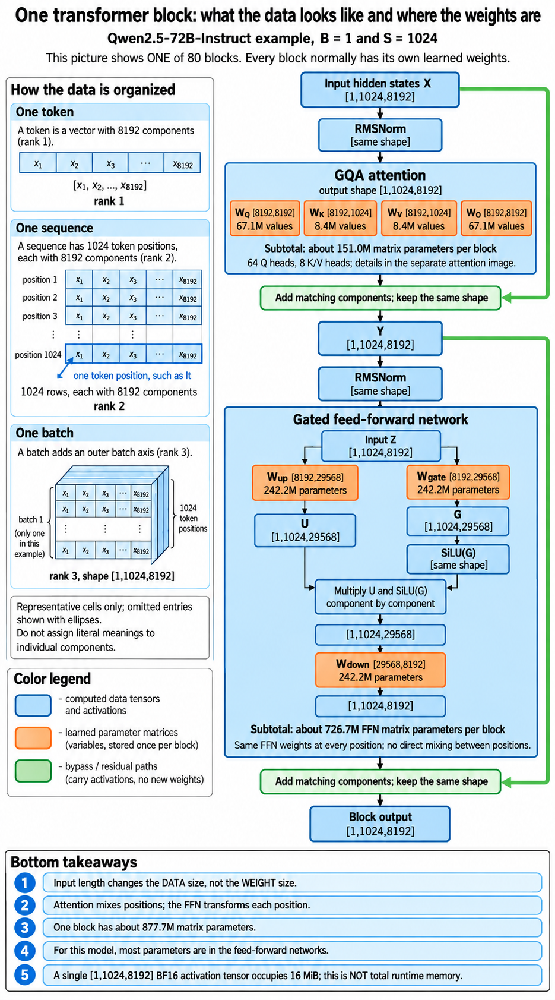
One main hidden-state tensor: [1, 1024, 8192] Elements = 1 × 1024 × 8192 = 8,388,608 If stored in BF16: 2 bytes per element Raw storage = 16,777,216 bytes = 16 MiB
Geometry source: Qwen2.5-72B-Instruct configuration. Large-number counts in this tutorial are calculations from that geometry, not measured activations.
Foundations · Text becomes working representations
3. Tokens become representations
Tokenization gives text a numerical identity; embeddings give each position a starting vector that the blocks can process.
Four names for four different things
| Name | What it is | Example, for illustration |
|---|---|---|
| Token | A vocabulary item representing a text piece | “Paris” or “ is” |
| Token ID | An integer identifying that item in a particular vocabulary | ID(Paris) |
| Embedding | The learned starting vector selected by that ID | E[ID(Paris), :] |
| Hidden state | A position's internal vector at a particular processing stage | The vector after Block 2 |
A tokenizer follows its vocabulary and splitting rules. It does not normally ask the transformer to understand the sentence first. Reusable pieces allow unfamiliar words, names, and code identifiers without a separate vocabulary entry for every possible complete word.
Illustrative tokenization, not a verified Qwen tokenizer result: “Paris is beautiful.” → [“Paris”, “ is”, “ beautiful”, “.”] One token = one item One sequence = the ordered list of token occurrences One batch = several sequences processed together
An ID selects a row, not a physical address
The embedding table E has one row per vocabulary token and one column per component. A token ID is a row index. Nearby IDs need not have related meanings. The ID is not a memory address, a similarity score, or a token's universal “real value”.
E: [vocabulary size, D]
Starting vector at position t = E[token_id[t], :]
Toy vocabulary and table, chosen only for teaching:
ID 0: I → [1, 0]
ID 1: am → [0, 1]
ID 2: fine → [1, 1]
Sequence [I, am] gives:
X = [[1, 0], ← position 0: I
[0, 1]] ← position 1: am
Without batch axis: [2 positions, 2 components]
With batch axis: [1 sequence, 2 positions, 2 components]
These are two rows of one sequence, not two sub-sequences. Stacking adds a position axis. It does not give each vector another component. In a chat example, prompt and answer tokens use this same position axis; answer tokens do not get a new kind of dimension.
The same token starts the same, but need not end the same
Within one model, the same token ID normally selects the same raw token embedding. Later blocks can produce different hidden states for different occurrences, because their earlier context and positions differ.
Compare “The financial bank …” and “Beside the river bank …”. If “bank” has the same ID in both, its starting vector is the same. At that position, attention can use the preceding words “financial” or “river”. The resulting hidden states can differ. No explicit human-readable “financial institution” label is required.
Token ID → raw embedding → Block 1 hidden state → Block 2 hidden state → … → final hidden state → next-token scores
“Hidden” means internal to the model. It includes representations in the middle of the network and the final vector before the vocabulary projection.
Same width does not mean a universal representation
Every position in a given model's main hidden stream normally has the same width D, even if its token represents a different amount of text. Internal projections can temporarily use other widths. Two different models can use different widths, different token splits, or equal widths with entirely different learned coordinates. There is no standard 100-number vector for “Paris” shared by all models.
Blocks update the values at the existing positions. They do not append each altered version as another token. In the two-row toy, both rows remain present as the matrix moves through the shared stack. Only adding another input or generated token adds a position.
The transformer core · Match first, then transfer information
4. Attention: how tokens exchange information
Attention lets a position receive a weighted mixture of information from the positions it is allowed to read.
Why “It” needs more than its own starting vector
In “The cat was tired. It …”, the earlier words help predict what follows “It”. Information about “cat” and “tired” can be useful. Attention provides a learned way to bring information from those positions into the working representation at “It”. It does not directly select the word “slept”.
There are two jobs: decide how much each source should contribute, and obtain what it contributes. Q and K do the first job. V does the second.
| Vector | Job | What it is not |
|---|---|---|
| Query Q at the receiving position | Compared with source keys to calculate matching scores | A question written in English |
| Key K at each source position | The vector that a query matches against | A permanent importance score for that token |
| Value V at each source position | Information supplied to the weighted mixture | The updated hidden state after this attention step |
A useful limited analogy is a library search: the search description is Q, each book's searchable description is K, and its contents are V. Matching descriptions helps decide what to read, but descriptions and contents serve different purposes. Attention mixes several sources rather than necessarily choosing one book. The actual model uses learned numbers, not literal search sentences.
First, make Q, K, and V at every position
We start with a small numerical example based on the chat's teaching values. It is one head with two-component vectors. Treat words as simplified positions. For this close-up, omit normalization, positional rotation, and biases. None of the values below are real Qwen activations.
Stored matrices: [output components, input components]
WQ = [[1, 0], WK = [[1, 0], WV = [[2, 0],
[0, 1]] [0, 0.5]] [0, 3]]
q = x WQᵀ k = x WKᵀ v = x WVᵀ
| Position | Toy hidden state x | Q | K | V |
|---|---|---|---|---|
| 0: The | [0, 0] | [0, 0] | [0, 0] | [0, 0] |
| 1: cat | [2, 0] | [2, 0] | [2, 0] | [4, 0] |
| 2: was | [1, 0] | [1, 0] | [1, 0] | [2, 0] |
| 3: tired | [0, 2] | [0, 2] | [0, 1] | [0, 6] |
| 4: It | [1, 1] | [1, 1] | [1, 0.5] | [2, 3] |
| 5: slept | Future relative to position 4; its contribution is blocked | |||
Every position produces all three vectors. “cat” is not only a key and “It” is not only a query. The same WQ is used at every row, as are WK and WV. Different inputs can produce different outputs. Q and K happen to be equal for “cat” here because its second component is zero; their roles remain different.
Then match the query at “It” against each allowed key
Receiving query: q(It) = [1, 1] Score for source j: s_j = q(It) · k_j Scaled score: ℓ_j = s_j / √dh Here dh = 2 components per query/key, so divide by √2.
The scaling helps keep dot-product scores from growing too large as the head width grows. Otherwise softmax can become extremely concentrated. Dividing by √dh controls that tendency; it does not change how many positions are readable.
| Source position | Key | Dot-product score | Scaled score | Attention weight |
|---|---|---|---|---|
| The | [0, 0] | 0 | 0.0000 | 0.0829 |
| cat | [2, 0] | 2 | 1.4142 | 0.3411 |
| was | [1, 0] | 1 | 0.7071 | 0.1682 |
| tired | [0, 1] | 1 | 0.7071 | 0.1682 |
| It | [1, 0.5] | 1.5 | 1.0607 | 0.2395 |
| slept | Not readable here | Masked | −∞ | 0 |
Softmax converts the allowed scores into nonnegative weights that sum to one. The future score is set to negative infinity before softmax, giving zero weight. Setting a forbidden score to zero would not block it: exp(0) is positive.
α_j = exp(ℓ_j) / Σallowed sources exp(ℓ_source) For “It”, allowed sources are positions 0 through 4, including itself. Softmax axis = source/key position Not vocabulary item, vector component, or head index
Finally, multiply each weight by its matching value vector
The output from the matching stage connects to the mixing stage. Each weight multiplies the computed V vector for the same source position, not the learned WV matrix, and not only V(It).
Head output at It = Σj α_j v_j ≈ 0.082934 × [0, 0] ← The + 0.341129 × [4, 0] ← cat + 0.168200 × [2, 0] ← was + 0.168200 × [0, 6] ← tired + 0.239537 × [2, 3] ← It ≈ [2.1800, 1.7278]
The calculation uses unrounded weights; displayed numbers are rounded. The result is a two-component head output, not a new token and not a “final V”. After combining heads and applying the attention output projection, the attention branch returns an update to the block.
Two components do not mean two readable tokens
Q's width tells us how many numbers participate in each comparison. The number of allowed source positions tells us how many comparisons are made. A two-component query can compare with five, a hundred, or more two-component keys. Head width is not a look-back limit. A source's weight is relative to this query, head, and context—not one permanent importance assigned to that token.
Every row has its own attention, in one shared calculation
The diagram may enlarge only “It”, but attention is not restricted to the last row. For one sequence and one head, collect all queries, keys, and values as matrices:
Q: [T, dh] K: [T, dh] V: [T, dv]
Scores = Q Kᵀ / √dh shape [T, T]
A = softmax_over_key_positions(Scores + M)
O = A V shape [T, dv]
M[i,j] = 0 if j ≤ i
= −∞ if j > i
Score-grid rows = receiving/query positions
Score-grid columns = source/key positions
Hidden-state columns, by contrast, = vector components
For the row at “cat”, only “The” and “cat” are readable. For the row at “It”, positions through “It” are readable. These rows can be computed together because they use Q/K/V projected from the block's already available input—not the newly completed attention output of another row.
The transformer core · Several mixtures, with order
5. Multiple heads and positional information
Multiple heads provide different information mixtures at each position, while positional information makes the comparisons sensitive to token order.
Why one mixture may not be enough
One head produces one set of source weights for each receiving position. “It” may need both information about who is involved and information about their condition. One head can combine both, but multiple heads allow separate weighting patterns and separate projected features before their outputs are joined.
A head could emphasize “cat” while another emphasizes “tired”. Those are imagined teaching roles, not roles assigned by developers or measured in this Qwen model. Heads are learned numerical mechanisms. More heads are not automatically better.
Same positions, different learned head groups
In standard multi-head attention, different heads use different groups of learned query, key, and value weights. All positions share the weights of a given head within a given block. Another block normally has another set of weights.
Toy: D = 4, two heads, dh = 2 Stored WQ: [4 output components, 4 input components] First 2 output rows of WQ → Head 1 queries Next 2 output rows of WQ → Head 2 queries For one position: Head 1 output: [a, b] Head 2 output: [c, d] Concatenate: [a, b, c, d] Attention branch output = [a, b, c, d] WOᵀ
The letters are placeholders, not measured values. The output projection WO can combine features from different heads at this position. It is not the vocabulary projection, or LM head, after the block stack.
MHA, GQA, and MQA change K/V sharing
| Design | Query heads | Key/value heads | Sharing |
|---|---|---|---|
| MHA: multi-head attention | Hq | Hq | Each query head has its own K/V head |
| GQA: grouped-query attention | Hq | Fewer than Hq, more than one | Each group of query heads shares one K/V head |
| MQA: multi-query attention | Hq | One | All query heads share one K/V head |
Each query head still performs the complete match → make weights → mix information calculation. It does not require its own unique K/V vectors. Different queries can create different mixtures from the same shared sources.
A small GQA example
Suppose two query heads share keys [1, 0] and [0, 1], with values [10, 0] and [0, 10]. The first query is [1, 0]; the second is [0, 1]. Divide scores by √2, and suppose both source positions are allowed.
Head 1 scaled scores = [0.7071, 0]
Head 1 weights ≈ [0.6698, 0.3302]
Head 2 scaled scores = [0, 0.7071]
Head 2 weights ≈ [0.3302, 0.6698]
Head 1 output ≈ 0.6698×[10, 0] + 0.3302×[0, 10]
≈ [6.6976, 3.3024]
Head 2 output ≈ 0.3302×[10, 0] + 0.6698×[0, 10]
≈ [3.3024, 6.6976]
Same K/V sources; different Q → different mixtures
(Output values use unrounded weights.)
This is a local illustrative GQA comparison, not a full model trace. In generation, past K/V are stored in a KV cache. Fewer K/V heads reduce their projection width and cache storage relative to MHA with the same query-head count and head width. Shared K/V need not be physically copied for every query head.
Real-model geometry: 64 query heads, 8 K/V heads
The Qwen2.5-72B-Instruct anchor has 64 query heads, 8 K/V heads, and 128 components per head. “64 attention heads” refers to the query-head count; it does not mean 64 separate K/V heads.
Query width = 64 × 128 = 8192 K/V width = 8 × 128 = 1024 Query heads per K/V group = 64 / 8 = 8 One-based grouping in the diagram: Q heads 1–8 share K/V head 1 Q heads 9–16 share K/V head 2 … Q heads 57–64 share K/V head 8
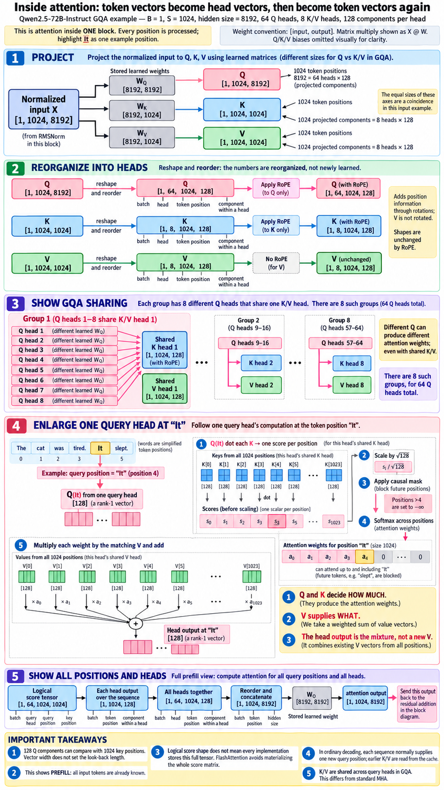
| Stage | Example shape | Axis meanings |
|---|---|---|
| Normalized input | [1, 1024, 8192] | [batch, position, hidden component] |
| Q projection | [1, 1024, 8192] | [batch, position, projected query component] |
| K and V projections | [1, 1024, 1024] | [batch, position, projected K/V component] |
| Q organized into heads | [1, 64, 1024, 128] | [batch, query head, position, head component] |
| K and V organized into heads | [1, 8, 1024, 128] | [batch, K/V head, position, head component] |
| Logical attention scores | [1, 64, 1024, 1024] | [batch, query head, query position, key position] |
| Head outputs | [1, 64, 1024, 128] | [batch, query head, position, output component] |
| Joined outputs, then WO | [1, 1024, 8192] | [batch, position, hidden component] |
In K/V shape [1, 1024, 1024], one 1,024 is positions and the other is projected features. Their equality is accidental. Splitting the projected feature axis into heads is a reshape and axis rearrangement, not another learned layer. A different sequence length changes the position axis, not the projection width.
Order needs another signal
“Dog bites man” and “Man bites dog” contain the same words in different orders. A causal mask restricts visibility, but it is not a complete position or distance representation. A positional mechanism makes comparisons depend on where tokens occur.
RoPE, rotary position embedding, rotates pairs of coordinates in Q and K according to position before their dot products are calculated. It normally leaves V unchanged. It does not enlarge the vectors, rotate the causal mask, or append a position token.
For one coordinate pair at position t, angle θt:
[a, b] → [a cos(θt) − b sin(θt),
a sin(θt) + b cos(θt)]
Toy: [1, 0]
Angle 0° → [1, 0]
Angle 90° → [0, 1] (up to floating-point roundoff)
Row-vector convention: q at position t becomes q Rtᵀ.
With matching rotation schedules:
(q Rtᵀ) · (k Rjᵀ) = q Rtᵀ Rj kᵀ
The comparison can depend on relative displacement j − t.
The 90-degree rotation is a teaching choice, not a real Qwen angle. Real RoPE uses different rotation rates for coordinate pairs. The shape stays unchanged.
When identical inputs really do produce identical vectors
Same input plus the same deterministic projection gives the same output. In a RoPE-based model's first block, two occurrences of the same token can therefore have the same pre-RoPE Q/K/V for the same head, assuming identical other inputs. Q/K can then differ after position-dependent rotation. Even before considering that, different allowed context can give different attention outputs. Later blocks receive already contextualized states, so their projected Q/K/V can also differ.
The transformer core · Process each row's gathered information
6. Feed-forward networks: computation within each token
A feed-forward network transforms the features within each position's vector after attention has supplied context.
Process together does not mean mix together
The FFN may receive a whole tensor Z shaped [B, T, D], not only the row for “It”. It applies the same learned transformation independently to every row. Its output at “It” directly reads only its input row at “It”. That row can already contain information from earlier positions because attention gathered it.
Attention: output at position t may depend on several allowed input rows. FFN: output at position t directly depends on input row t. Whole sequence in the Qwen anchor: [1024 positions, 8192 components] → [1024 positions, 29568 expanded components] → [1024 positions, 8192 components] The position count stays 1024. The component width changes.
Calling the FFN “within each token” describes its information dependency, not a requirement to run a separate token loop. Many rows can be processed together by a matrix operation.
Expand, process, contract
A basic FFN projects the vector to another width, applies a nonlinear function, and projects back. A larger intermediate width offers more components in which to build useful features. The down projection combines those features into the main hidden width required by the rest of the block.
Basic FFN, biases omitted: f(x) = activation(x Wupᵀ) Wdownᵀ Wup: [F, D] Wdown: [D, F] x: [D] expanded vector: [F] output: [D]
Two linear projections without a nonlinear function can be combined into one linear projection. A nonlinear operation permits relationships that this single linear map cannot express. For the gated version below, the componentwise product is nonlinear too; removing SiLU alone would not make the entire gated network linear.
SwiGLU: learn both features and how they contribute
The Qwen2.5 anchor uses a gated FFN. Two learned projections receive the same normalized input. The up branch supplies expanded features. The gate branch passes through SiLU. Multiply the branch outputs component by component, then use the down projection.
u = x Wupᵀ g = x Wgateᵀ σ(g) = 1 / (1 + exp(−g)) SiLU(g) = g × σ(g) applied to each component z = u ⊙ SiLU(g) ⊙ means componentwise multiplication f(x) = z Wdownᵀ Stored shapes: Wup: [F, D] Wgate: [F, D] Wdown: [D, F]
The gate is not a binary on/off switch. Its multiplier is not restricted to the range zero to one: SiLU can be negative or greater than one. It can reduce, amplify, or reverse a contribution.
A complete small SwiGLU calculation
This standalone toy uses D = 2 and F = 3. The input is already the vector entering the FFN. Biases are omitted. It is not a continuation of the Chapter 4 attention numbers.
x = [1, 2]
Wup = [[1, 0], Wgate = [[1, 0], Wdown = [[1, 0, 1],
[0, 1], [0, −1], [0, 1, 1]]
[1, 1]] [1, 0]]
u = x Wupᵀ = [1, 2, 3]
g = x Wgateᵀ = [1, −2, 1]
SiLU(g) ≈ [0.7311, −0.2384, 0.7311]
z = u ⊙ SiLU(g)
≈ [0.7311, −0.4768, 2.1932]
f(x) = z Wdownᵀ
≈ [0.7311 + 2.1932, −0.4768 + 2.1932]
≈ [2.9242, 1.7164]
The calculation uses unrounded values internally. The three expanded features return to two main components. Nothing here reads another token row or chooses a next word.
How large are these learned matrices?
All three are learned parameter matrices. For the Qwen2.5-72B anchor, their orientations differ but their element counts are equal:
| Matrix | Stored shape [out, in] | Parameters in one block | Same matrix type across 80 blocks |
|---|---|---|---|
| Wup | [29568, 8192] | 242,221,056 | 19,377,684,480 |
| Wgate | [29568, 8192] | 242,221,056 | 19,377,684,480 |
| Wdown | [8192, 29568] | 242,221,056 | 19,377,684,480 |
| All three | Three separate matrices per block | 726,663,168 | 58,133,053,440 |
One projection: 8192 × 29568 = 242,221,056 parameters One FFN: 3 × 242,221,056 = 726,663,168 All 80 FFNs: 80 × 726,663,168 = 58,133,053,440 ≈ 58.13B
The FFN output enters the second residual addition before the next block. It does not directly produce “slept”. In an MoE model, a router and several expert FFNs replace the single dense FFN at selected places; that is a later chapter's different selection mechanism.
The transformer core · Put the parts back together
7. The complete transformer block
A transformer block keeps the same token positions while adding an attention update and a feed-forward update to their hidden states.
One block: two branches and two bypasses
In this pre-normalized dense design, normalization comes before each main branch. Let X contain all the block's input rows. Attention returns one update per row. The first addition produces U. A second normalization and the FFN produce another update. The second addition produces Y, which enters the next block.
U = X + Attention(RMSNorm1(X))
Y = U + FFN(RMSNorm2(U))
X, U, Y all have shape [B, T, D].
Input ──────────────────────────────┐
└→ RMSNorm1 → Attention → add X ←─┘
↓ U
U ────────────────────────────────┐
└→ RMSNorm2 → FFN → add U ←─────┘
↓ Y → next block
The bypasses carry the unnormalized input to that branch. The first residual does not add a previous token's V or a previous block's V. At “It”, it adds the attention result for “It” to the input hidden state of that same position. The second adds the FFN result to U, before the second normalization.
Residual addition: keep the input and add an update
Residual paths let a branch modify an existing representation without recreating it from scratch. They also provide direct paths for training gradients through a deep stack. Addition is componentwise, not concatenation.
Standalone illustration; branch outputs are assumed toy updates: x = [1, 2] Attention branch update = [0.5, −1] u = x + update = [1.5, 1] FFN branch update = [0.2, 0.3] y = u + update = [1.7, 1.3]
These stipulated updates show the additions only. They are not claimed results of a complete attention/FFN run. The two-component width and the identity of the position stay unchanged.
RMSNorm controls scale within each row
A row's numerical scale can change as updates accumulate. RMSNorm divides its components by their root-mean-square magnitude, then applies a learned scale vector. It acts over hidden components, independently at each position. It does not gather other positions, average the batch, select the last token, or generate text.
For a row x with D components: rms(x) = √((Σc x_c²) / D + ε) RMSNorm(x)_c = γ_c × x_c / rms(x) γ: learned vector of D scale values ε: small positive constant for numerical stability Toy x = [3, 4], γ = [1, 1], ε omitted only for this calculation: rms(x) = √((9 + 16) / 2) = √12.5 RMSNorm(x) ≈ [0.8485, 1.1314]
Unlike LayerNorm, RMSNorm does not subtract the mean. The Qwen2.5 anchor config uses an epsilon of 0.000001. The real branch calculation includes it; the toy leaves it out to expose the scale idea. Each normalization operation has its own learned scales.
The whole-model map, with attention in its proper place
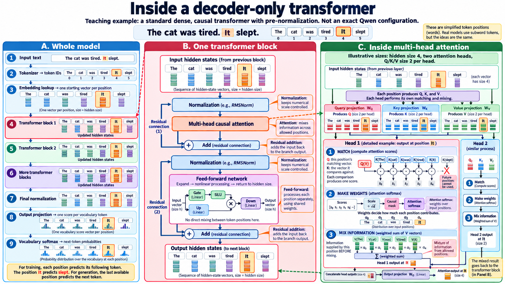
In this image, Panel A's Blocks 1, 2, and “More transformer blocks” form the stack. Stage #7 is final normalization, not the last block. Stage #8 is the vocabulary projection or LM head. Stage #9 is vocabulary softmax. The block's WO and an attention head are different from the LM head.
“Decoder-only” names the architecture: the blocks use causal self-attention. It does not mean only the stages after the blocks. “Decoding” names the generation process; a “decoding rule” names how a token is selected.
Number impression: where the parameters actually sit
The Qwen2.5-72B anchor has 80 transformer blocks, commonly called 80 transformer layers. Each block normally has its own projection matrices. Those matrices are reused across all positions and across ordinary generation steps.
| Projection | Stored shape [out, in] | Parameters per block | Across 80 blocks, approximately |
|---|---|---|---|
| WQ | [8192, 8192] | 67,108,864 | 5.37B |
| WK | [1024, 8192] | 8,388,608 | 0.67B |
| WV | [1024, 8192] | 8,388,608 | 0.67B |
| WO | [8192, 8192] | 67,108,864 | 5.37B |
| Wup, Wgate, Wdown combined | Three matrices as in Chapter 6 | 726,663,168 | 58.13B |
Attention matrices per block: 2 × (8192 × 8192) + 2 × (8192 × 1024) = 150,994,944 All seven main projection matrices per block: 150,994,944 + 726,663,168 = 877,658,112 ≈ 877.7M Across 80 blocks: 80 × 877,658,112 = 70,212,648,960 ≈ 70.21B Vocabulary size = 152064 Embedding table: 152064 × 8192 = 1,245,708,288 ≈ 1.25B Separate LM-head matrix: the same element count Block matrices + embedding + separate LM head = 72,704,065,536 ≈ 72.70B Add normalization scales and Q/K/V biases → about 72.71B total
The configuration specifies that input embeddings and the LM head are not tied, so they are separate parameter tables. The matrix subtotal omits normalization scales and attention projection biases. It is not an exact all-parameter audit. The model card reports 72.7B parameters, consistent with this rounded scale picture.
One stack processes all known rows
During prompt prefill, all supplied tokens are already known. Embedding lookup returns their rows. All those rows go through Block 1; its updated matrix goes to Block 2, and so on. Normalization processes each row. Attention produces an output for every row with its own allowed context. The FFN processes every row independently.
Known sequence matrix → Block 1: update all its rows → Block 2: update all its rows → … → Block 80: update all its rows Within one block: positions can be computed together. Across blocks: the dependency remains sequential.
Knowing the tokens does not mean their contextual states are already known. Those states still have to be calculated. Parallel computation is possible because queries and source K/V at a block come from its available input rows. A receiving row does not wait for the newly updated attention output of an earlier row in that same block.
A two-row close-up makes the fixed mask visible
This separate toy uses one sequence [I, am], D = 2, one head, and identity Q/K/V projections. Normalization, RoPE, and the other block operations are omitted from the arithmetic, not from the actual architecture.
X = [[1, 0], rows: I, am
[0, 1]] columns: hidden components
WQ = WK = WV = identity, so Q = K = V = X
Scores = Q Kᵀ / √2
≈ [[0.7071, 0],
[0, 0.7071]]
Score-grid axes: query position × key position
After the ONE fixed causal mask:
[[0.7071, −∞],
[0, 0.7071]]
Softmax across each row:
A ≈ [[1, 0],
[0.3302, 0.6698]]
O = A V
≈ [[1, 0],
[0.3302, 0.6698]]
Both outputs can be computed together. The first row cannot read the second; the second can read both. The equal shapes of X and the score grid in this toy are accidental: X columns are components, but score-grid columns are source positions. Both resulting rows continue through WO, the first residual addition, normalization, the FFN, and the second residual addition, then enter the next block together.
Training uses several predictions; generation uses the last available one
The last-row highlight must not be mistaken for a last-row-only architecture. For a supplied chat-training example, prompt and answer occupy the same position axis:
Illustrative sequence; real chat templates have their own markers: [how, are, you, ?, Assistant-start, I, am, fine, End] Every position has D components. Every processed position is handled by every query head. One sequence → ONE shared stack, not one model per target.
| Prediction row | May read | Next-token target |
|---|---|---|
| Assistant-start | Prompt and Assistant-start | I |
| I | Prompt, Assistant-start, I | am |
| am | Prompt, Assistant-start, I, am | fine |
| fine | Prompt, Assistant-start, I, am, fine | End |
This is teacher forcing: correct previous tokens are supplied rather than sampled. The I row cannot read its future target “am”, even though that token is present elsewhere in the supplied sequence. The same final normalization and LM head can operate independently at every prediction row. They do not newly collect earlier-position vectors: attention already did that inside the stack.
Training compares these predictions with known targets; it need not generate or sample answer tokens to calculate the supervised loss. Selected token losses are combined, their gradients contribute to the same shared weights, and an optimizer performs an update. There is no required update after each row, no mask rotation between rows, and no special set of weights saved for this sentence. In response-only SFT, prompt-target losses may be ignored while the prompt remains readable context. That loss mask is different from the causal attention mask. Chapters 9–10 develop the learning calculation.
Why ordinary generation becomes sequential after prefill
After the supplied prompt passes through all blocks, its last position's final vector predicts the first new token. If “slept” is selected, its ID selects a new embedding. That new position passes through all 80 blocks to predict what follows it. The model normally reuses previous K/V from each block's cache instead of running every old row through the stack again.
Earlier rows cannot read the newly appended token, so their causal representations do not change just because the sequence grew. The next continuation token, however, is unknown until it is selected. That dependency makes ordinary autoregressive generation sequential. “Can compute known positions together” does not mean hardware computes every operation at exactly the same instant.
| Situation | New rows processed in a forward calculation | Where the context comes from |
|---|---|---|
| Prompt prefill | Many known prompt rows, possibly chunked | Supplied prompt and allowed earlier positions |
| Teacher-forced training | Many known input rows | Supplied sequence, restricted by causal masking |
| Ordinary cached decode | Usually one newly supplied position per sequence | That row plus past K/V stored for each block |
Sequence length, context window, and cache are different
| Term | Meaning |
|---|---|
| Sequence length | The current number of token positions in this sequence |
| Context window | The supported/configured maximum token span for a sequence |
| KV cache | Stored per-block K/V data that avoids recomputing past positions |
| Positions computed this call | The rows currently processed; possibly a prompt chunk or one new decode row |
The 1,024-position diagrams do not specify a typical request length. Actual length depends on system instructions, conversation history, supplied documents, and generated text. Advertised “200K” or “1M” figures usually refer to a context window if labeled as context support, not a cache byte size; some releases separately state an output limit.
Toy context window = 10 tokens Input length = 7 After 1, 2, 3 generated tokens: lengths 8, 9, 10 A fourth would make 11, beyond this toy limit. For a 32768-token window: 30000 input tokens leave 32768 − 30000 = 2768 positions, subject to any separate output limit and the actual formatted input size.
Input and generated continuation generally share the window, including chat-template and system tokens. If the supported span would be exceeded, the system must stop, discard or summarize earlier context, or use a supported larger-window setup. The original tokens do not become free space merely because K/V were cached.
For this specific older Qwen anchor, its configuration sets max_position_embeddings = 32768. Its model card describes support up to 131,072 with documented long-context settings and lists generation up to 8,192. Those statements are not a promise that every deployment provides the larger limit. Read the model and runtime settings together.
Scale and limits: official model configuration and official model card, including long-text deployment guidance. These chapters use its geometry as a historical teaching anchor; they do not claim measured Qwen activations or current-family architecture equivalence.
The transformer core · From vectors to words
8. From hidden states to generated text
A transformer produces numbers, not words. The output stages turn the last available position’s hidden state into scores for possible next tokens. A separate selection rule chooses a token, and the model repeats the process.
Where did the earlier context go?
It was gathered inside attention in the transformer blocks. For the illustrative prefix “The cat was tired. It”, attention at “It” mixes information from permitted positions. Residual connections and feed-forward networks update that position’s vector. Later blocks repeat this process. The earlier positions still have their own vectors; they have not been deleted or concatenated into one giant vector.
The final vector at “It” is a learned representation influenced by the prefix—not a lossless copy of it. The output head uses that representation to predict what comes next.
| Stage in the supplied diagrams | Purpose | Does it gather earlier positions again? |
|---|---|---|
| #7: final normalization | Adjust the numerical scale of each hidden vector. | No. |
| #8: LM head | Use a learned matrix to produce one logit per vocabulary token. | No. |
| #9: vocabulary softmax | Convert logits to next-token probabilities. | No. |
| Token selection | Choose a token using greedy decoding or sampling. | No. |
Tiny worked example: one vector, three candidates
This is an independent toy calculation, not a measured prediction for the sentence. Use row activations and stored weight matrices shaped [output components, input components]. The toy vocabulary contains only “slept”, “ran”, and a period.
Final hidden state h = [2, 2]
Toy RMSNorm: scale γ = [1, 1]; epsilon omitted
RMS(h) = sqrt((2² + 2²) / 2) = 2
z = γ ⊙ h / RMS(h) = [1, 1]
LM-head rows:
W = [[ 2, 0], ← slept
[ 0, 1], ← ran
[-1, 1]] ← period
logits = zWᵀ = [2, 1, 0]
p(i) = exp(logit(i)) / Σⱼ exp(logit(j))
p ≈ [0.6652, 0.2447, 0.0900]
The head computes scores; it does not look up the “meaning” of the vector in a dictionary. Training made its numerical transformation useful for prediction. The vocabulary matrix may share weights with the input embedding table, depending on the model.
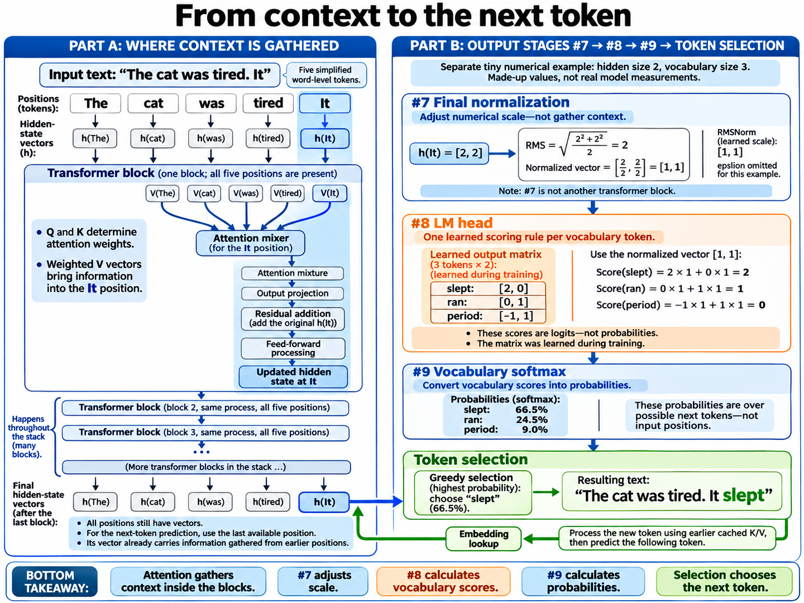
Selection: highest score or a controlled random choice?
| Rule | What happens |
|---|---|
| Greedy | Choose the highest logit: “slept” in this example. |
| Sampling | Draw from the distribution. “Ran” can be selected even though its probability is lower. |
| Temperature | Divide logits by a positive temperature before softmax. A lower temperature concentrates probability on higher scores. |
| Top-k / top-p sampling | Limit eligible vocabulary candidates, then renormalize and sample. These are decoding controls, not MoE routing. |
Toy temperature comparison: T = 1.0: softmax([2, 1, 0]) ≈ [66.5%, 24.5%, 9.0%] T = 0.5: softmax([4, 2, 0]) ≈ [86.7%, 11.7%, 1.6%]
A positive temperature changes sampling probabilities, but not their ranking, so it does not change ordinary greedy selection. Some APIs use temperature zero as shorthand for greedy decoding; literal division by zero is not the calculation.
The generation loop
- Process the known prompt through the stack: prefill.
- Use its last-position prediction to choose the first new token.
- Append that token, embed it, and process it through every block using earlier cached keys and values.
- Use this new last position to predict the following token. Stop at an ending token or a configured limit.
How models learn · Predictions become shared-weight updates
9. Training and gradients
Training changes learned parameters so observed target tokens become more likely. A forward pass calculates predictions and loss. Backpropagation calculates gradients. An optimizer uses those gradients to update the selected parameters.
One sequence, many position vectors, one model
“I am” is one sequence with two token positions, not two sub-sequences. After embedding, each position has its own hidden vector. Stack the vectors into rows; this adds a position axis, not extra components to either vector.
Toy embeddings, assuming one token per word:
X = [[1, 0], ← I
[0, 1]] ← am
Unbatched shape: [positions, components] = [2, 2]
Batched shape: [sequences, positions, components] = [1, 2, 2]
ONE shared path:
X → Block 1 → Block 2 → … → Last block
→ row-wise final norm → shared LM head → row-wise probabilities
Every block receives the whole position matrix. Parameters are shared across positions within a layer; different layers normally have different parameters. Attention exchanges information across allowed rows. Standard normalization and the FFN act on each row separately.
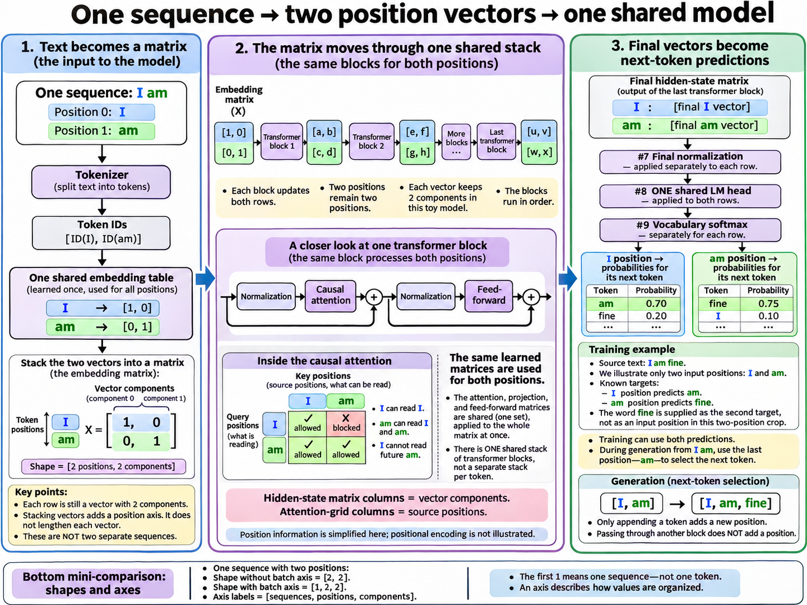
A fixed causal mask—not four rotating passes
Each attention head calculates a query, key, and value for every supplied position. Heads are not divided between tokens: if a layer has nine query heads, each position uses all nine. The previous block’s input rows already exist, so the attention output at “am” need not wait for this block’s newly computed output at “I”. It reads keys and values projected from the input rows.
Tiny attention close-up only; normalization omitted:
X = [[1, 0], [0, 1]]
WQ = WK = WV = identity; one head, head width = 2
QKᵀ / sqrt(2) ≈ [[0.7071, 0],
[0, 0.7071]]
After the fixed causal mask:
[[0.7071, -∞],
[0, 0.7071]]
Row-wise softmax ≈ [[1, 0],
[0.3302, 0.6698]]
Weighted V outputs ≈ [[1, 0],
[0.3302, 0.6698]]
Hidden-state columns above mean vector components. Attention-score columns mean source positions. Their sizes happen to match here, but their meanings do not. Positions can be calculated together; hardware may tile or chunk the work. Blocks still run in order.
Teacher forcing: how a whole answer is trained
Take the prompt “How are you?” and the supplied answer “I am fine”. Use illustrative word tokens plus assistant-start and response-ending markers. Real chat templates may use several special tokens.
Supplied training sequence: [prompt tokens, Assistant-start, I, am, fine, End] Each prediction uses the current position to predict the next one: Assistant-start → I I → am am → fine fine → End
Teacher forcing supplies the correct earlier tokens instead of the model’s sampled earlier predictions. The known answer allows many predictions in one shared forward computation. At “I”, the causal mask blocks its target “am”, even though “am” exists elsewhere in the supplied sequence. No token sampling is required to calculate supervised loss.
| Prediction row | May read | Must not read | Response-only loss target |
|---|---|---|---|
| Assistant-start | Prompt and Assistant-start | I and later positions | I |
| I | Prompt, Assistant-start, I | am and later positions | am |
| am | Prompt, Assistant-start, I, am | fine and later positions | fine |
| fine | All preceding positions and fine | End | End |
Loss: how much probability did the target receive?
For a known target, cross-entropy is the negative log of its probability. “Correct” means the dataset target, not the only possible valid continuation. Below is a toy mean over the four response targets.
Target probabilities: [0.7, 0.8, 0.5, 0.9]
Position losses = -ln(p_target)
≈ [0.3567, 0.2231, 0.6931, 0.1054]
Mean response loss ≈ 0.3446 nats
General masked token mean:
L = Σₜ mₜ[-ln pₜ(targetₜ)] / Σₜ mₜ
mₜ = 1 for included targets; 0 for excluded targets
Other reduction conventions exist, such as a mean per sequence. Changing the denominator changes the relative weighting of examples. Implementations often calculate a stable cross-entropy directly from logits rather than storing explicit probabilities.
Tiny numerical update: two weights in the output head
Freeze the normalized input to the toy head at [2, 1]. Train only its row for “slept”; hold the competing “ran” logit at zero. These two candidates are the entire toy vocabulary.
x = [2, 1]; w = [0.30, 0.40]
logit(slept) = xwᵀ = 2(0.30) + 1(0.40) = 1
logit(ran) = 0
p(slept) ≈ 0.7311; L = -ln p(slept) ≈ 0.3133
Loss-to-logit gradient: ∂L/∂logit(slept) = p(slept) - 1 ≈ -0.2689
Parameter gradient: ∂L/∂w = (p(slept) - 1)x
≈ [-0.5379, -0.2689]
Plain SGD, learning rate η = 0.10:
w_new = w - η ∂L/∂w ≈ [0.3538, 0.4269]
Recompute with the same fixed x:
new logit ≈ 1.1345
new p(slept) ≈ 0.7567; new loss ≈ 0.2788
A gradient measures local sensitivity: how a small change would affect loss. It is not a new weight. The competing logit has a nonzero loss derivative too, but no trainable parameter in this toy baseline. The SGD update improves this example; it is not a guarantee about every example or held-out data.
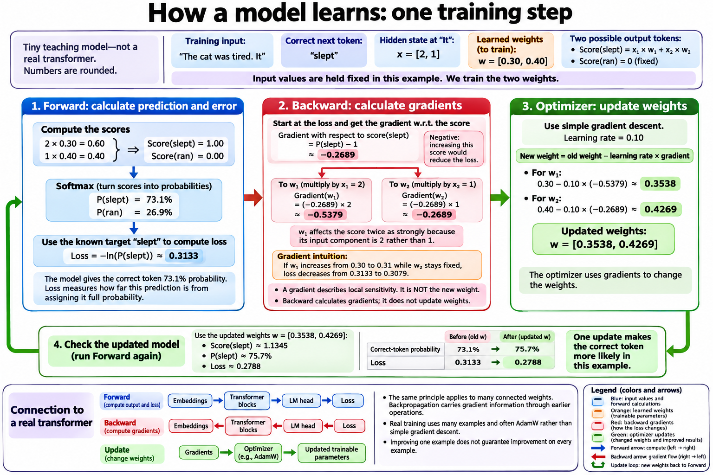
Two losses, one shared gradient, one optimizer step
Now isolate a different toy head with one scalar weight. The position at “I” predicts “am”; the position at “am” predicts “fine”. Both predictions use the same old weight. Their hidden values are made up and fixed, not outputs of the earlier attention calculation.
w = 0.50; logit(am) = 0; logit(fine) = w h At I: h = -1; target = am p(am) ≈ 0.6225; L₁ ≈ 0.4741; ∂L₁/∂w ≈ -0.3775 At am: h = 2; target = fine p(fine) ≈ 0.7311; L₂ ≈ 0.3133; ∂L₂/∂w ≈ -0.5379 Mean loss = (L₁ + L₂) / 2 ≈ 0.3937 Shared gradient = (∂L₁/∂w + ∂L₂/∂w) / 2 ≈ -0.4577 ONE SGD update: w_new = 0.50 - 0.10(-0.4577) ≈ 0.5458 Next check: p(am at I) ≈ 0.6332; p(fine at am) ≈ 0.7487
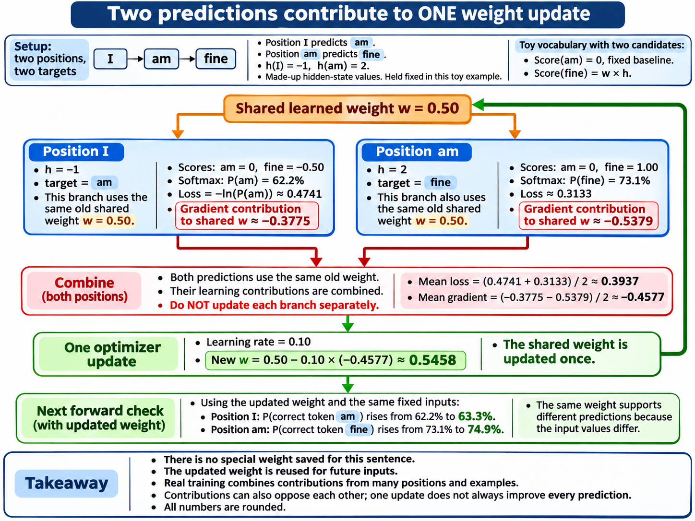
No sentence-specific weight is saved. The updated parameters remain shared and are reused for future inputs. A real step often aggregates many positions across many sequences. Gradient accumulation can combine several microbatches before a single optimizer step, provided their loss weighting is handled consistently.
Where does backward happen in the full model?
| Operation | Uses learned parameters? | Backward role |
|---|---|---|
| Embedding lookup | Yes: embedding table | Accumulate gradients into selected embedding rows when trainable; token IDs stay discrete. |
| Attention / FFN / normalization | Yes: their matrices and learned scales | Produce parameter gradients and pass activation gradients upstream. |
| Residual addition | No parameters of its own | Send gradients through both incoming branches. |
| LM head | Yes: vocabulary matrix | Differentiate both its weights and its input hidden states. |
| Softmax / cross-entropy | No ordinary learned parameters | Convert prediction mismatch into logit gradients. |
For a row hidden vector x and logits z = xWᵀ: ∂L/∂z = p - y (y is the one-hot target row) ∂L/∂x = (p - y)W (continues into earlier operations) ∂L/∂W = (p - y)ᵀx (accumulates across uses of W)
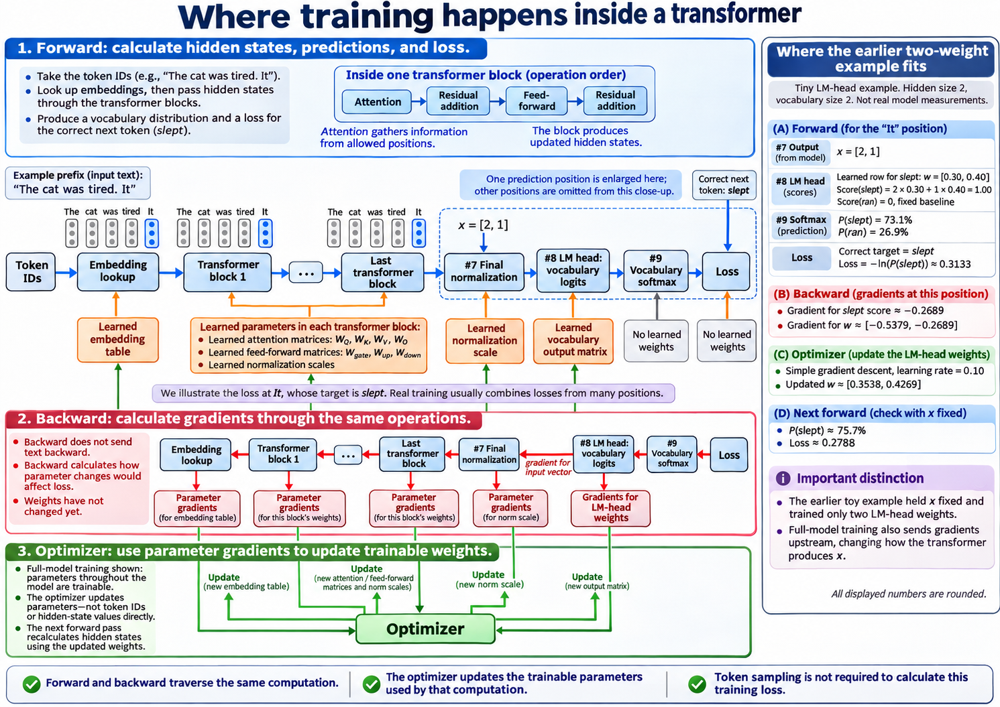
How models learn · Training signal and trainable weights
10. Pretraining, instruction tuning, and reasoning training
The architecture determines how a model computes. Training determines what those computations become useful for. Two models can share an architecture and still behave differently because they learned from different data and objectives.
What supplies the learning signal?
| Training approach | Purpose | Mechanism |
|---|---|---|
| Causal-LM pretraining | Learn broad language patterns and useful skills from varied data. | Known sequences supply shifted next-token targets, commonly across most eligible positions. |
| Supervised fine-tuning (SFT) | Learn desired responses, instruction following, style, or worked solutions. | Prompt–response examples supply next-token targets; response-only loss is common, not mandatory. |
| Reinforcement learning (RL) | Make rewarded generated behavior more likely. | Generate responses, evaluate them, then calculate an algorithm-specific objective from rewards and token probabilities. |
| Reasoning training | Improve problem-solving behavior. | A goal served by worked-solution SFT, RL on checkable tasks, or a combination—not a new block type. |
Pretraining and SFT both commonly use next-token cross-entropy. SFT does not predict a whole answer as one object. Chapter 9’s teacher-forced “I am fine” answer still supplies multiple next-token targets. SFT and RL are commonly post-training stages, but these are customary uses, not hard mathematical boundaries. Pretraining can also teach coding, mathematics, and conversation.
A tiny reward example—not a complete RL recipe
Suppose two sampled solutions receive verifier rewards 1 and 0. Subtract the group mean to obtain simple centered learning signals. This toy omits normalization, clipping, reference penalties, and other algorithm-specific details.
Toy rewards: [1, 0] Mean reward: 0.5 Centered signals A: [+0.5, -0.5] Simplified score-function loss: L = -Σᵢ Aᵢ log πθ(responseᵢ | prompt) ∂L/∂log πθ(response₁) = -0.5 → descent favors higher probability ∂L/∂log πθ(response₂) = +0.5 → descent favors lower probability
A real response log-probability is built from its conditional token probabilities. The sampled tokens and rewards are treated as data for the policy update; ordinary backpropagation does not run through discrete sampling or a verifier. Rewards can represent preference or quality, not only binary correctness. Decoding controls must be accounted for when identifying the actual behavior distribution.
Which weights change? An independent choice
| Full-weight fine-tuning | LoRA adaptation | |
|---|---|---|
| SFT objective | Update existing model weights from target-answer losses. | Freeze the base and train selected low-rank branches from target-answer losses. |
| RL objective | Update existing model weights from reward-based objectives. | Freeze the base and train selected low-rank branches from reward-based objectives. |
LoRA: a correction beside an existing matrix
LoRA does not normally add transformer blocks. It adds two small learned factors beside a selected linear projection. In a query projection, both branches receive the normalized input hidden vector, and their outputs are added before head reshaping, positional processing, and query–key matching.
Row-vector convention: W: [d_out, d_in] frozen base matrix A: [r, d_in] trainable narrow projection B: [d_out, r] trainable expansion q = xWᵀ + s(xAᵀ)Bᵀ Common scaling: s = α/r; other scaling conventions exist Adapter parameter count = r(d_in + d_out) rank(BA) ≤ r (the correction is low-rank, not necessarily W + sBA)
LoRA on WQ changes the query before matching with keys. LoRA on WV changes the information later mixed by attention. Configuration selects layers, projection types, and rank; validation and memory budget guide the choice. Blocks 1, 5, and 7 are possible placements, not uniquely good ones. Each selected projection usually has its own factors, shared across its token positions.
Historical numerical anchor: Qwen2.5-72B
The supplied figure uses the earlier Qwen2.5-72B query matrix, not the latest Qwen architecture. Each of its query-output components has a weight for every input component. This is a hidden-vector-to-query-vector projection, not a token-to-token matrix. More sequence positions reuse it; they do not enlarge it.
One WQ: 8,192 × 8,192 = 67,108,864 weights Rank r = 16: A: 16 × 8,192 = 131,072 B: 8,192 × 16 = 131,072 Total adapter = 262,144 = 0.390625% of this WQ matrix WQ adapters in three blocks = 786,432 WQ adapters in all 80 blocks = 20,971,520
These counts cover only the named factors. They exclude other targets, gradients, optimizer state, and activations. The frozen base still needs storage and computation. Query projections are not universally square, and GQA key/value matrices can have narrower output widths.
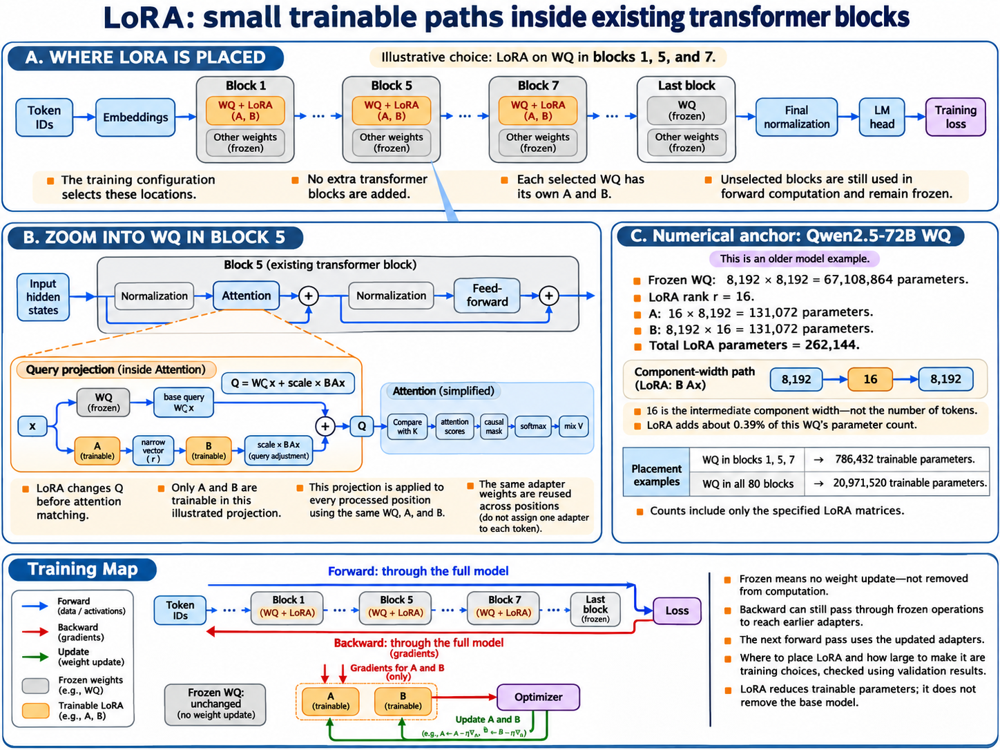
Why “zero-initialized LoRA” does not mean both factors are zero
A common initialization uses random A and zero B. The product BA is zero, so the initial adapter leaves the base projection unchanged. But the first backward pass treats the factors differently.
For q = xWᵀ + s(xAᵀ)Bᵀ and row g = ∂L/∂q: ∂L/∂B = s gᵀ(xAᵀ) ∂L/∂A = s (gB)ᵀx At B = 0, A random: BA = 0; ∂L/∂A = 0 ∂L/∂B can be nonzero if g and xAᵀ provide a signal Toy scalar-output branch, s = 1: x = [1, 2]; A = [0.1, 0.2]; B = [0]; g = [3] xAᵀ = 0.5; adapter output = 0 ∂L/∂B = 1.5; ∂L/∂A = [0, 0]
After B changes, A can receive loss gradients too. If A is zero and B is nonzero, the roles reverse. If both factors start at zero, both loss gradients are zero and this ordinary bilinear branch cannot start learning. A zero loss gradient also does not universally mean no parameter change: configured weight decay or existing optimizer state can matter.
Historical shape reference: Qwen2.5-72B-Instruct configuration. Its dimensions are retained as a teaching anchor; do not substitute them for another variant’s configuration.
Dense and MoE architectures · The common-network baseline
11. Dense transformers
A dense transformer uses the same feed-forward network for every position in a given block. It does not use the input to select a small subset from a bank of feed-forward experts. The transformer studied so far is already a dense model.
Same functions, different results
Block 5’s attention projections and FFN occupy fixed places in the model. A token’s numerical values do not choose another WQ. Instead, different hidden inputs produce different Q/K/V, attention weights, and FFN outputs through the same learned functions.
| Choice | What it controls | Compatible with a dense model? |
|---|---|---|
| Causal attention | Which positions may be read. | Yes. |
| GQA | How query heads share key/value heads. | Yes. |
| KV cache | Reuse of computed earlier keys and values. | Yes. |
| LoRA | Which adaptation parameters are trained. | Yes. |
| Dense versus routed MoE | Common FFN versus input-selected expert FFNs. | This is the distinction being defined. |
Tiny parameter budget
Use a toy block with hidden width 4 and a gated FFN intermediate width 8. Count matrix elements, omitting biases and normalization scales. For toy attention, choose two query heads of width 2 and one shared KV head of width 2.
Gated FFN: W_gate: [8, 4]; W_up: [8, 4]; W_down: [4, 8] FFN weights = 3 × 4 × 8 = 96 Attention projections: WQ: [4, 4] → 16 WK: [2, 4] → 8 WV: [2, 4] → 8 WO: [4, 4] → 16 Attention projection weights = 48 Toy block matrix total = 96 + 48 = 144
Increasing the prompt from two positions to six leaves these parameter counts unchanged. It creates more activations and more work. Adding another block normally adds a different set of weights. The embedding table and LM head also contribute to model storage, so counting one block is not counting the whole model.
Historical scale: why 67 million was not the FFN
Historical Qwen2.5-72B anchor, one block: WQ = 8,192 × 8,192 = 67,108,864 matrix weights Gated FFN = 3 × 8,192 × 29,568 = 726,663,168 matrix weights
The first figure counts a query projection inside attention. The second counts gate, up, and down projections inside the FFN. MoE usually replaces the second component, not the first.
Where the cost goes
| Resource | What grows it | Practical effect |
|---|---|---|
| Parameter storage | More blocks, wider projections, larger vocabulary, precision. | Weights must fit somewhere regardless of prompt length. |
| FFN/projection work | More processed positions and larger matrices. | Dense matrices are repeatedly evaluated and can benefit from batching. |
| Full-attention work | More query–key pairs. | Long supplied sequences have quadratic pairwise work; cached single-token attention scans its visible context. |
| Runtime state | Batch size, sequence length, hidden width, cached heads. | Activations and caches are separate from learned parameters. |
| Training state | Trainable parameters, optimizer, saved backward activations. | Full-weight training needs much more than inference weight storage alone. |
Dense and MoE architectures · More stored capacity, selected computation
12. Mixture-of-experts from first principles
Mixture-of-experts (MoE) stores several feed-forward networks, then sends each position to a selected few. The aim is to increase learned capacity without evaluating the whole expert bank for every position.
An expert is usually an FFN, not a whole transformer
Typical dense block: attention → residual → norm → common FFN → residual Typical routed-MoE block: attention → residual → norm → router + selected FFNs → combine → residual
Each expert owns its own matrices. A router scores experts using the position’s current contextual hidden state. Top-k selects the k highest-scoring expert IDs. The model configuration sets k; it does not mean the k previous tokens or k attention heads.
Tiny worked router: calculate top-2
Toy row input x = [1, 2] Router matrix R has one row per expert: E1: [1, 0] → score 1 E2: [1, 1] → score 3 E3: [0, 0] → score 0 E4: [0, 1] → score 2 Scores = xRᵀ = [1, 3, 0, 2] Top-2 selects E2 and E4. One illustrative weight rule: softmax over selected scores [3, 2] ≈ [0.7311, 0.2689] y = 0.7311 E2(x) + 0.2689 E4(x)
The router scores experts without running all their large FFNs. Its scores are scalars used for selection; E2(x) is a full expert output vector, not the score 3. Score functions, selection adjustments, and selected-weight normalization vary by architecture.
The selected experts receive the same full vector
Do not split the hidden components between experts. Each selected expert processes the same position’s input independently. Combine their same-width output vectors with a weighted sum, not concatenation.
Independent toy combine example, not derived from the router above: Expert A output = [2, 0]; Expert B output = [0, 4] Routing weights = [0.75, 0.25] MoE branch = 0.75[2, 0] + 0.25[0, 4] = [1.5, 1] Block output then adds this branch to its residual stream.
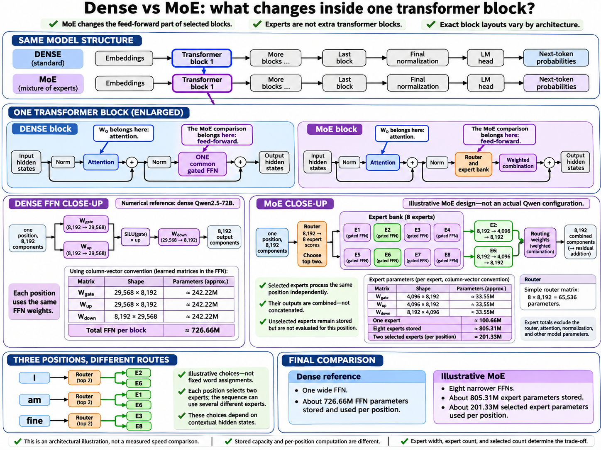
Stored versus selected parameters
For a bias-free gated expert with hidden width d and intermediate width f, gate, up, and down matrices together have three times d times f weights. The supplied comparison chooses narrower experts; its arithmetic follows from that choice.
Historical dense reference: d = 8,192; f_dense = 29,568 One dense FFN = 3 × 8,192 × 29,568 = 726,663,168 Illustrative MoE, NOT a Qwen configuration: 8 routed experts; top-2; f_expert = 4,096 One expert = 3 × 8,192 × 4,096 = 100,663,296 Stored expert bank = 8 × 100,663,296 = 805,306,368 Selected expert matrices per position = 2 × 100,663,296 = 201,326,592 Simple router = 8 × 8,192 = 65,536 (bias omitted)
| Count | What it tells you | What it does not tell you |
|---|---|---|
| Stored expert bank | All routed expert weights that must be stored. | Work done for one position. |
| Selected experts per position | Weights of the expert FFNs evaluated for this position. | Total active model parameters, exact memory traffic, or latency. |
| Total model parameters | Expert banks plus attention, embeddings, norms, router, and other modules. | Every token evaluates every stored expert. |
Different positions can select different experts. Top-2 for each position does not mean only two experts run across the entire sequence or batch. An expert skipped for one token can still process another.
Shared experts and learned specialization
Some designs also have shared experts that run for every position alongside the selected routed experts. Count their weights and work separately. A shared expert need not have the same width or mixing rule as the routed ones.
Dense and MoE architectures · Making sparse work run efficiently
13. What makes MoE difficult in practice
Choosing a few experts is only the beginning. A runtime must group the right vectors, move them to the right weights, execute uneven workloads, and restore their outputs to the original positions. These steps can consume the arithmetic savings.
Dispatch → expert computation → combine
| Stage | What happens | Information that must survive |
|---|---|---|
| Route | Calculate expert IDs and mixing weights. | Original position, selected IDs, weights. |
| Dispatch | Group each position’s vector by its selected experts. | Assignment-to-position mapping; one position may have several assignments. |
| Compute | Run each expert on its assigned group. | Each output’s assignment identity. |
| Combine | Return outputs, apply routing weights, and sum at each original position. | Original order and weights; then perform the block’s residual addition. |
Tiny dispatch example: three positions, four experts
These routes are made up, not fixed word assignments. Each position selects two experts, so three input vectors create six expert assignments.
| Original position | Selected experts | Combine weights |
|---|---|---|
| 0: I | E1, E3 | 0.75, 0.25 |
| 1: am | E2, E3 | 0.60, 0.40 |
| 2: fine | E1, E4 | 0.50, 0.50 |
Dispatched groups: E1 ← [x₀, x₂] E2 ← [x₁] E3 ← [x₀, x₁] E4 ← [x₂] Assignment counts = [2, 1, 2, 1] Total = 6, not 3 Restore position 0: y₀ = 0.75 E1(x₀) + 0.25 E3(x₀) If E1(x₀) = [2, 0] and E3(x₀) = [0, 4], y₀ = [1.5, 1]
The groups may execute in a different order from the sentence. Combine reconstructs one output per original position. Attention context is not reordered semantically; dispatch is a temporary arrangement for expert computation.
Load balancing and routing collapse
If nearly every token chooses E1, that expert and its device become overloaded while other experts receive little useful training. Persistent concentration is often called routing collapse. Load-balancing mechanisms discourage it using auxiliary losses, routing adjustments, or other model-specific controls.
Toy workload: 6 positions × top-2 = 12 assignments 4 experts → balanced average = 12 / 4 = 3 assignments each Balanced-looking counts: [3, 3, 3, 3] Concentrated counts: [6, 6, 0, 0] Both contain 12 assignments, but create different device workloads.
Balanced average usage does not require every expert in every sentence, nor does it guarantee equal execution time when experts or devices differ. A balancing term is an additional training pressure, not the main language-model objective.
Capacity: what happens when one expert is too popular?
| Policy | Behavior | Consequence |
|---|---|---|
| Capacity-limited | Bound assignments per expert in a batch or scheduling unit. | Excess assignments need explicit dropping, rerouting, or another handling rule. |
| Dropless | Accommodate all routed assignments. | Avoid drops, but variable group sizes still need memory and scheduling support. |
For the concentrated toy counts above, a capacity of four leaves two overflow assignments at each busy expert. What happens to those assignments depends on the actual implementation; never assume they silently choose the next-best expert.
Expert parallelism and communication
Expert parallelism places different expert weights on different devices. If a token selects an expert elsewhere, its vector must travel there and its result must return. Distributed runtimes often exchange groups of assignments between devices. Communication, synchronization, and a busy expert can delay the whole step.
Large grouped matrix operations can be efficient. Tiny groups may underuse the accelerator, and empty experts need correct handling. Grouped expert kernels reduce scheduling overhead, but cannot erase poor routing or a slow interconnect.
How gradients follow the routes
Backward reverses combine and dispatch. It sends the appropriately weighted gradient to each selected expert, accumulates expert parameter gradients, and sums input-gradient contributions back at the original position. Frozen experts still need the input-gradient path when earlier adapters are trainable.
For y = Σₑ aₑ Eₑ(x), let g = ∂L/∂y. Expert-output gradient: ∂L/∂Eₑ(x) = aₑ g Mixing-weight gradient: ∂L/∂aₑ = g Eₑ(x)ᵀ Input gradients include the selected experts' paths and differentiable routing-weight paths, where applicable.
Modern efficiency · Known prompts, new tokens, reusable state
14. Inference: prefill, decoding, and memory
Inference can avoid recomputing earlier token representations and organize work to use hardware better. Prefill, KV caching, batching, chunking, and FlashAttention solve different problems; they can be used together.
Prefill versus decode
| Prefill | Ordinary cached decode | |
|---|---|---|
| Known input | The supplied prompt, possibly processed in chunks. | One newly supplied token per active sequence per ordinary step. |
| Q/K/V work | Project every supplied position at each attention layer. | Project the new position; reuse earlier K/V at each layer. |
| Attention | Each query reads itself and permitted earlier positions. | The new query reads cached earlier positions and its own new K/V. |
| Prediction used | The last prompt position predicts the first generated token. | The newly processed position predicts the following token. |
| Dependency | Known positions can be computed together; blocks remain sequential. | The next unknown token normally waits for selection of the current one. |
Causality applies to training and inference. A one-token decode may not need an explicit triangular mask because no future entries exist in its available cache. Padding, chunked processing, and other layouts still require the appropriate attention restrictions.
Why cache K and V, not the earlier Q?
A new query needs earlier keys to calculate match scores and earlier values to gather information. It does not need the earlier queries that made earlier predictions. Causal attention also prevents earlier representations from changing when a later token arrives, making their cached keys and values reusable under fixed weights.
One attention layer, logical per-head shapes:
Prefill: Q [B, Hq, T, Dh]
K,V [B, Hkv, T, Dh]
Decode: new Q [B, Hq, 1, Dh]
available K,V [B, Hkv, T+1, Dh]
Logical decode scores: [B, Hq, 1, T+1]
Hq = query heads; Hkv = KV heads; Dh = head width
GQA maps multiple query heads to each KV head.
The cache stores computed activations, not learned weights or final hidden vectors. It is layer-specific and request-specific. Reusing it avoids earlier-token recomputation, but the new query still scans its permitted context in full attention.
Tiny cache budget
For a uniform full-attention stack, omit allocator overhead, metadata, padding, and temporary workspaces. Real hybrid models can have different kinds of state across layers.
KV bytes = 2 × B × L × T × Hkv × Dh × bytes_per_element
↑ both K and V
Toy: B=1, L=2, T=6, Hkv=1, Dh=2, two-byte elements
KV bytes = 2 × 1 × 2 × 6 × 1 × 2 × 2 = 96 bytes
Separate illustrative geometry:
B=1, L=4, T=4,096, Hkv=2, Dh=8, two-byte elements
KV bytes = 1,048,576 bytes = 1 MiB
GQA can reduce cache size by using fewer KV heads than query heads. More concurrent requests and longer retained contexts increase the cache budget. Prompt and generated continuation share the context allowance, including relevant template tokens.
Batching: more independent work at once
Two requests with three supplied positions and hidden width four have a logical hidden-state shape [2, 3, 4]: sequences, positions, components. Both use the same weights, but each keeps its own attention context and cache. They do not read each other’s text.
During decode, a batch can contain one new token from each active request. Continuous batching lets completed requests leave and new work join. The goal is useful hardware utilization and throughput—not filling memory for its own sake. Larger batches can require more memory and increase waiting or per-request delay.
FlashAttention: use score tiles immediately
Locate FlashAttention inside the attention sublayer, around query–key scores, masking, softmax, and the weighted-value sum. A straightforward implementation may write a full score matrix and a full probability matrix to device memory, then read them again. FlashAttention tiles the computation through a small fast workspace and maintains running statistics and output accumulators.
The mathematical idea is that the final weighted sum can be accumulated without first storing every normalized weight. Here is a scalar illustration, not an implementation or benchmark.
One query, two allowed sources: scores = [0, ln(3)] → exponentials = [1, 3] V values = [10, 20] After source 1: numerator = 1×10 = 10; denominator = 1 After source 2: numerator = 10 + 3×20 = 70; denominator = 1 + 3 = 4 Attention output = 70 / 4 = 17.5
Do not normalize each tile separately and average its result; that loses the correct global weighting. Real FlashAttention uses numerically stable online softmax. If a new tile raises the running maximum score, it rescales the old denominator and numerator before accumulating the new contributions.
Stable scalar online-softmax sketch: Keep running maximum m, denominator l, and weighted-value accumulator o. For a new tile with scores sⱼ and values vⱼ: m_new = max(m, maxⱼ sⱼ) c = exp(m - m_new) l_new = c l + Σⱼ exp(sⱼ - m_new) o_new = c o + Σⱼ exp(sⱼ - m_new) vⱼ Final result = o / l Initialize from the first nonempty allowed tile.
Chunked prefill: one continuing context
Divide a toy six-position prompt into three scheduled chunks. Each chunk passes through the same stack and retains its per-layer K/V. Later chunks can read the preceding chunks; earlier chunks cannot read the future.
| Chunk | Original positions | Reads at each layer | Retained state afterward |
|---|---|---|---|
| A: The, cat | 0, 1 | Allowed positions within A. | A’s K/V. |
| B: was, tired | 2, 3 | A’s cached K/V plus allowed B positions. | A + B K/V. |
| C: It, slept | 4, 5 | A + B cached K/V plus allowed C positions. | A + B + C K/V. |
Word-level tokenization and punctuation are simplified here. Positions do not restart at zero for each chunk. The last position of C predicts the first continuation token. In a single-head causal example, six positions still have 21 allowed query–key pairs; chunk scheduling does not make earlier context disappear.
Compute-bound or memory-bound?
| Situation | Common pressure | Why it is not a universal verdict |
|---|---|---|
| Large prefill | Many positions provide large matrix work; attention also has many pairs. | Context length, kernels, precision, and hardware affect the bottleneck. |
| Small-batch decode | Reading large weights and caches for relatively few new positions can limit speed. | Batching improves weight reuse; long context increases cache reads and attention work. |
| Routed MoE | Expert weight movement, tiny groups, dispatch, and cross-device communication. | Fewer selected weights do not guarantee lower latency than efficient dense kernels. |
Prefill delay contributes to time until the first token. Decode speed contributes to time between tokens. A runtime can improve aggregate throughput without improving either latency for every request.
| Technique | Work it avoids or organizes | State it does not eliminate |
|---|---|---|
| KV cache | Avoid earlier-token recomputation during decode. | The retained per-layer K/V itself. |
| FlashAttention | Avoid full intermediate attention tables in slower device memory. | Model weights, needed K/V, and allowed pairwise attention work. |
| Batching | Group independent requests for efficient shared execution. | Each request’s separate context and cache. |
| Chunked prefill | Schedule one prompt in smaller pieces. | The continuing prompt context and its accumulated cache. |
Modern efficiency and architectural changes
15. Long context and hybrid sequence models
Purpose: Keep useful information from a long input without making every layer revisit every earlier position separately.
Different ways to remember earlier positions
| Sequence mixer | How it reads history | Memory and trade-off |
|---|---|---|
| Full causal attention | Compare the current Q with all allowed K; softmax the scores; mix the corresponding V. | During cached generation, retain separate K/V for earlier positions. Direct access grows more expensive with context. |
| Sliding-window attention | Apply ordinary attention only to a recent window, sometimes alongside global-attention layers or special positions. | A bounded local cache can discard older entries. A distant position is no longer directly readable by that local layer. |
| Linear attention | Use a different attention formulation, often accumulating key/value associations into a fixed-shape state rather than normalizing scores over every earlier position. | Can avoid quadratic sequence-length work for fixed head dimensions. It is not automatically equivalent to softmax attention. |
| Gated DeltaNet | Retain part of an association state, correct an association using the current K/V, then read it using Q. | A fixed-shape recurrent state mixes, decays, and overwrites information. It is not a lossless copy of history. |
Number impression: With eight positions, one causal attention head has 36 allowed query–key pairs, including each position itself. A window of three positions including the current position has only 21. At the eighth position, full attention reads eight positions; this local window reads positions six through eight.
Full causal pairs: 1 + 2 + 3 + 4 + 5 + 6 + 7 + 8 = 36 Window-3 pairs: 1 + 2 + 3 + 3 + 3 + 3 + 3 + 3 = 21 Full-attention prefill: O(L²) pair work per head, with head width fixed Window attention: O(Lw), with window width w Fixed-state recurrence: O(L) state updates, with state dimensions fixed
A small Gated DeltaNet-style recurrence
Think of the state as a numerical association matrix. K addresses an association; V supplies what to write; Q reads it. With row vectors, a simplified recurrence is:
S̄ₜ = αₜ Sₜ₋₁ retain some earlier state prediction = kₜ S̄ₜ read the old association δₜ = βₜ (vₜ − prediction) choose how much to correct it Sₜ = S̄ₜ + kₜᵀ δₜ write the correction oₜ = qₜ Sₜ read the updated state S has shape [key components, value components]. α controls retention; β controls update strength.
Now shrink Q, K, V, and the state to scalars. Start with S₀ = 0 and use q = k = 1. This removes head geometry so we can see the update.
| Step | Retention α | Value v | Update β | Retained state | Correction δ | New state / output |
|---|---|---|---|---|---|---|
| 1 | 1 | 4 | 0.5 | 0 | 0.5 × (4 − 0) = 2 | 2 |
| 2 | 0.5 | 6 | 0.5 | 0.5 × 2 = 1 | 0.5 × (6 − 1) = 2.5 | 3.5 |
The second value corrects the association after some old information has decayed. By contrast, ordinary attention with equal scores for values 4 and 6 gives equal weights and an output of 5. These are different mechanisms, not equal computations.
Hybrid means different mixers in different blocks
Gated DeltaNet block → Gated DeltaNet block → Gated DeltaNet block → full-attention block → repeat
Each block still processes every valid position that passes through it. The model does not assign half the tokens to attention and the other half to Gated DeltaNet. Gated DeltaNet blocks retain recurrent and short-convolution state; full-attention blocks retain K/V caches. A hybrid model therefore still has some context-dependent cache growth.
Modern efficiency and architectural changes
16. Precision, quantization, and distributed execution
Purpose: Fit the model and its working state into available memory, while preserving useful numerical behavior and distributing computation where needed.
One model can use several precisions
Ask four separate questions: What is stored? What is multiplied? What accumulates the sum? What is updated? Weights, activations, caches, gradients, and optimizer state need not share a datatype. Activations are input-dependent intermediate tensors, such as hidden states and Q/K/V; the term does not mean only the output of an activation function such as SiLU.
| Representation | What the name tells you | Important distinction |
|---|---|---|
| FP32 | 32 bits: sign 1, exponent 8, stored fraction 23. | Common for sensitive reductions, optimizer state, and numerical references. |
| FP16 | 16 bits: sign 1, exponent 5, stored fraction 10. | More fraction bits than BF16, but a much narrower exponent range. |
| BF16 | 16 bits: sign 1, exponent 8, stored fraction 7. | Wide dynamic range does not mean FP32 accuracy. Both BF16 and FP16 use two bytes per value. |
| FP8 | Eight-bit floating-point variants, commonly E4M3 or E5M2. | The exponent/fraction split and special-value rules depend on the exact variant. Scaling and kernel support matter. |
| INT8 / INT4 | Integer codes interpreted through scales and sometimes zero points. | The code itself is not the reconstructed real-valued weight. |
| NF4 | A four-bit codebook-based weight representation. | Not the same encoding as an E2M1 floating-point value; often decoded for higher-precision computation. |
| MXFP4 / NVFP4 | Scaled low-bit floating-point schemes using FP4 element encodings. | MXFP4 conventionally uses E2M1 values with a shared E8M0 scale per 32 values. NVFP4 conventionally uses E2M1 values, an E4M3 scale per 16 values, and an additional tensor scale. Their packing and scaling contracts are not interchangeable. |
Exponent bits mainly control range; fraction bits mainly control spacing between nearby values. For normal binary values, the implicit leading bit makes significand precision 24 bits for FP32, 11 for FP16, and 8 for BF16.
Quantization changes representable values
Simplified symmetric INT8, scale s = 0.01, zero point z = 0: q = clip(round(w / s), supported integer range) ŵ = s q w = [ 0.237, −0.413 ] q = [ 24, −41 ] ŵ = [ 0.24, −0.41 ] ŵ − w = [0.003, 0.003]
This is approximation, not lossless compression. Groupwise scales adapt the representable grid to different regions of a weight tensor. Activation quantization, weight quantization, and cache quantization are separate decisions.
A weight-only four-bit path might store packed weights, decode a small BF16 tile, multiply BF16 operands, accumulate in FP32, then round the output to BF16. A compatible native low-bit kernel may instead consume low-bit operands directly. Neither path follows merely from the label “4-bit model.” Even FP32 accumulation cannot recover information already lost when the operands were quantized.
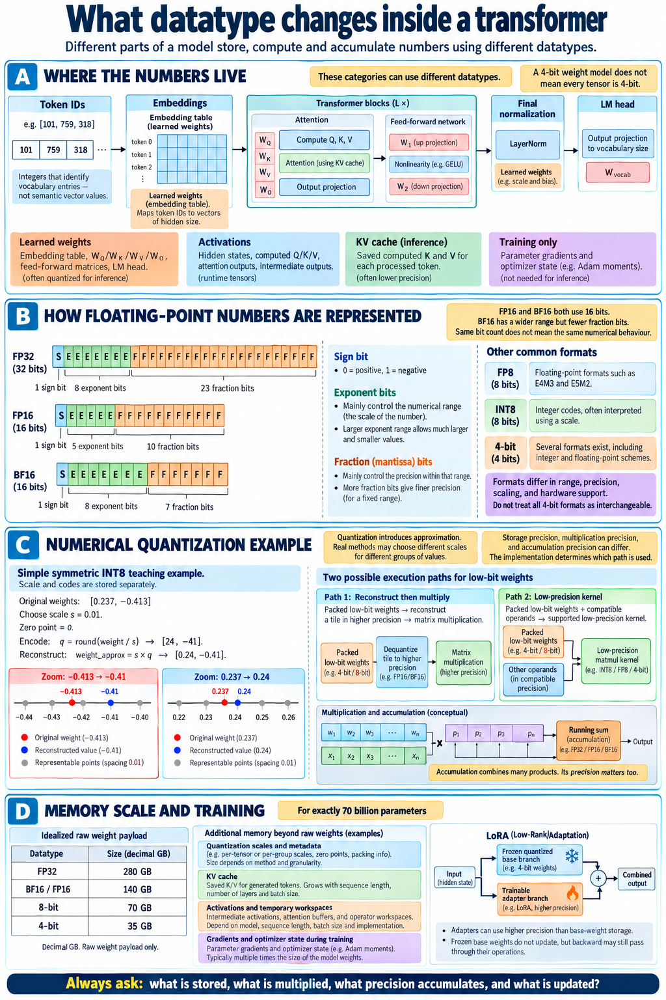
Number impression: raw weight payload
Raw bytes = number of parameters × bits per parameter / 8 Decimal GB = bytes / 1,000,000,000
| Exactly 70 billion weights | Idealized raw payload |
|---|---|
| FP32 | 280 GB |
| BF16 / FP16 | 140 GB |
| 8-bit | 70 GB |
| 4-bit | 35 GB |
These exclude scales, metadata, padding, activations, caches, workspaces, gradients, and optimizer state. LoRA reduces trainable weights and associated training state; it does not remove the base weights. Frozen base operations can still need input-gradient backward to reach earlier adapters.
Four ways to span devices
| Method | What is split? | Mechanism and principal cost |
|---|---|---|
| Tensor parallelism | Dimensions within projections or other operations. | Compute pieces of a tensor result; gather, sum, or redistribute when needed. Communication can be frequent. |
| Pipeline parallelism | Successive groups of blocks. | Send activations forward and training gradients backward between stages. Microbatches overlap different stages, but startup/drain and imbalance create idle bubbles. |
| Expert parallelism | The expert bank inside MoE sublayers. | Dispatch each position to its selected experts, then return and combine outputs. Communication and uneven expert load matter. |
| Data parallelism | Training examples across replicas of the same parameters. | Compute local gradients and synchronize an appropriately weighted aggregate. Basic replicated training duplicates model state; sharded approaches distribute some state. |
For tensor parallelism, keep our row-activation convention: x is a row and W is stored as [output, input]. Splitting W's output rows produces separate output components:
x = [1, 2, 3, 4]
W = [[1, 1, 0, 0],
[0, 0, 1, 1],
[2, 0, 0, 0],
[0, 3, 0, 0]]
y = x Wᵀ = [3, 7, 2, 6]
Device A, first two output rows: [3, 7]
Device B, last two output rows: [2, 6]
Concatenate output components, not add them.
A three-stage forward pipeline processing three microbatches takes five ideal equal-duration slots: three to fill the first microbatch's path and two more for the remaining microbatches. This is not a full forward/backward training schedule and is not ordinary independent processing of pieces of one sequence.
Equally weighted data-parallel local gradients: gA = [2, −1], gB = [0, 3] g = (gA + gB) / 2 = [1, 1] Example SGD, initial θ = [2, 3], learning rate η = 0.1: θnew = θ − ηg = [1.9, 2.9]
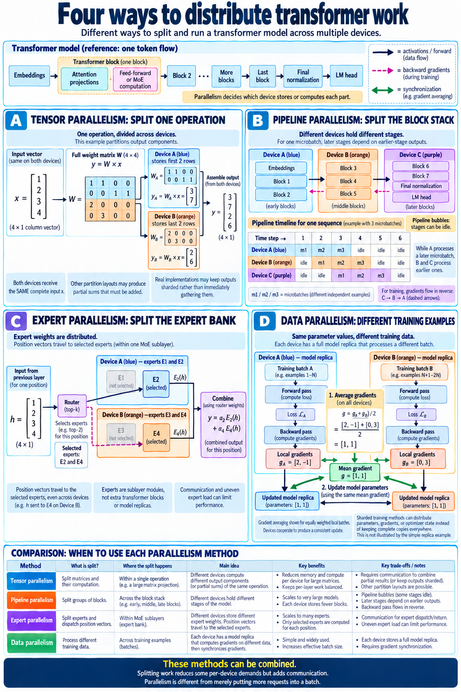
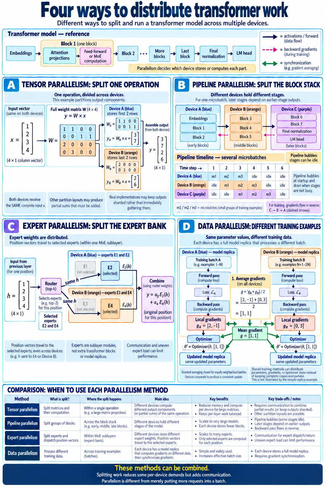
Modern efficiency and architectural changes
17. Multimodal inputs and multi-token prediction
Purpose: Multimodal processing lets the language-model stack use non-text information. Multi-token prediction supplies additional learning signals for future tokens. These are independent changes.
How an image becomes part of the input
Text → tokenizer → token IDs → embedding vectors
Image/video → preprocessing → vision encoder → merged/projected visual vectors
↓
organized mixed sequence → language-model blocks
→ final normalization → LM head → next text token
The image is not simply converted into ordinary word IDs. Its regions become learned visual vectors, placed at designated visual positions alongside text embeddings and special markers. At the interface, both kinds of position have the same hidden width. Position metadata can encode spatial and temporal structure.
In the supplied Qwen3.5 configuration, the vision encoder's internal width is 1152 and its output width is 4096, matching the language model. For a purely illustrative input with four prepared visual positions and six text/marker positions, the mixed sequence has ten positions, each 4096 wide. Actual image resolution, patching, merging, and markers determine the real position count.
Ordinary next-token training versus MTP
Ordinary training already scores many supplied positions in parallel: each position predicts its immediate successor. MTP adds objectives or modules for further future offsets.
| Context or objective | Illustrative target | What it means |
|---|---|---|
| Ordinary next token after “The cat” | sat | The main prediction distribution scores the immediate next token. |
| Additional future-offset objective | on | An auxiliary prediction module learns information about a later continuation token. |
| Further future-offset objective | the | A conceptual additional target; exact module layout and training schedule vary. |
The known continuation is “sat on the mat.” These words are illustrative tokens, not actual tokenizer results. Some MTP designs condition later modules on earlier token information; they are not necessarily independent guesses made by one unchanged LM head.
MTP is not speculative decoding
MTP describes training and prediction modules. Speculative decoding describes an inference algorithm: propose candidate tokens, verify them with the target model, accept an allowed prefix, handle any rejection, and continue. A separate draft model can supply proposals without MTP; an MTP-trained model can still run ordinary one-token decoding.
The Qwen3.5 model card reports multi-step MTP training; the supplied configuration declares one MTP hidden layer. Training steps, architectural module count, and the runtime's proposal length are different quantities. The field alone does not establish an enabled speculative runtime.
Source: official Qwen3.5 model card.
Qwen architecture walkthrough
18. Qwen’s architectural evolution
Purpose: Recognize which part of the computation changed, rather than treating every family name as a larger version of the same model.
| Selected stepping stone | Sequence mixing | Per-position processing | What to notice |
|---|---|---|---|
| Qwen2 / Qwen2.5, anchored by Qwen2.5-72B | Our 72B anchor uses full causal GQA attention; its config disables sliding-window attention. | Dense gated FFN. | The familiar embeddings → repeated normalized residual blocks → final norm → vocabulary head. Qwen2 also had MoE branches; the family was not exclusively dense. |
| Qwen3-32B | Full causal GQA attention with Q/K normalization. | Dense gated FFN. | A dense branch; explicit head width need not equal hidden width divided by query heads. |
| Qwen3-235B-A22B | Full causal GQA attention. | 128 routed experts, top-8 per position. | MoE changes the FFN path, not the definition of attention. |
| Qwen3-Next-80B-A3B | Three Gated DeltaNet blocks followed by one gated full-attention block. | 512 routed experts, top-10, plus one shared expert. | Hybrid sequence mixing, sparse MoE, and MTP; this selected checkpoint is text-only. |
| Qwen3.5-397B-A17B | Hybrid Gated DeltaNet / gated full attention. | 512 routed experts, top-10, plus one shared expert. | A vision encoder supplies multimodal inputs; the model card reports multi-step MTP training. |
| Selected Qwen3.8 releases | Continue the hybrid architecture foundation. | Both dense and MoE choices, depending on checkpoint. | Training and behavior can improve without replacing the main block pattern. See chapter 21 for exact checkpoints. |
Number impression: Qwen3-Next's 48-block, three-to-one pattern contains 36 Gated DeltaNet blocks and 12 full-attention blocks. Our Qwen3.5 anchor has 60 blocks, giving 45 and 15 respectively. Both retain recurrent state in some layers and K/V in others.
All these models still transform position vectors using weights shared across positions. Ordinary generation chooses a token, feeds it into the same stack, and repeats. “A22B,” “A3B,” and “A17B” are approximate active-parameter labels from model naming/cards, not expert counts or full weight-memory requirements.
Sources: Qwen2 family documentation; Qwen2.5-72B config; Qwen3-32B config; Qwen3 MoE config; Qwen3-Next card.
Qwen architecture walkthrough
19. Read a real Qwen model configuration
Purpose: Turn a JSON configuration into actual blocks, projection shapes, and retained state. A config describes geometry; it does not contain learned weight values or prove a particular runtime's memory use.
Our anchor is the supplied Qwen3.5-397B-A17B-config.json, cross-checked against the official configuration. Operation details below also follow the inspected Transformers implementation. Use row activations throughout: x[...,input], stored weights W[output,input], and y = x Wᵀ.
Start with boundaries and block types
| Field | Value | Meaning |
|---|---|---|
| text_config.hidden_size | 4096 | Each position has 4096 components at language-block boundaries. |
| num_hidden_layers | 60 | Main language-model blocks, not individual projections. |
| layer_types | Three linear_attention, then one full_attention, repeating | Here linear_attention identifies Gated DeltaNet: 45 GDN blocks and 15 full-attention blocks. |
| vision_config.out_hidden_size | 4096 | Visual outputs enter the same hidden-width interface. “text_config” names the language stack, not a text-only input restriction. |
| vocab_size | 248320 | Number of vocabulary logits at every scored position. |
| max_position_embeddings | 262144 | Configured native context setting; not current sequence length, a memory guarantee, or guaranteed quality at that length. |
| dtype / mamba_ssm_dtype | bfloat16 / float32 | Declared precision settings; recurrent-state precision is distinct from the general model dtype. Actual kernels and runtime casts require implementation inspection. |
| tie_word_embeddings / mtp_num_hidden_layers | false / 1 | Input embedding and output-head weights are untied; an MTP architectural setting is declared separately from the main 60 blocks. |
Illustrative batch B = 1, length L = 6: block-boundary activations: [B,L,H] = [1,6,4096] all-position logits: [1,6,248320] 15 repetitions × (3 GDN + 1 full attention) = 45 GDN + 15 full = 60 Each main block also contains its own MoE sublayer.
Full attention: hidden width is not Q width
num_attention_heads = 32; num_key_value_heads = 2; head_dim = 256 Q-only width = 32 × 256 = 8192 K width = V width = 2 × 256 = 512 Q heads per KV head = 32 / 2 = 16 Packed Q+gate width = 2 × 8192 = 16384 normalized X [B,L,4096] → packed projection [B,L,16384] → per-head split into Q and output gate, each [B,L,32,256] Q/K normalization; partial RoPE on Q/K Q [B,32,L,256]; K,V [B,2,L,256] → causal attention → head outputs [B,L,32,256] → flatten [B,L,8192] → multiply by sigmoid(output gate) → output projection [B,L,4096]
The inspected implementation packs Q and its gate into the same projection, splitting within each head's packed output. This does not create 64 query heads. The gate modulates the attention result; it is not another attention-score matrix. The configured partial rotary factor 0.25 applies RoPE to 64 of the 256 components per Q/K head.
| Full-attention weight | Stored shape [out,in] | Matrix weights |
|---|---|---|
| Packed Q + output gate | [16384,4096] | 67,108,864 |
| K projection | [512,4096] | 2,097,152 |
| V projection | [512,4096] | 2,097,152 |
| Output projection | [4096,8192] | 33,554,432 |
| These four matrices only, one full-attention layer | Sum of the above | 104,857,600 |
The Q-only conceptual matrix would be [8192,4096], but it is only part of the packed projection. Counts above exclude Q/K norm weights, block norms, MoE, and all other modules.
Gated DeltaNet uses a different geometry
linear_num_key_heads = 16; linear_key_head_dim = 128 linear_num_value_heads = 64; linear_value_head_dim = 128 Q width = K width = 16 × 128 = 2048 V width = 64 × 128 = 8192 Packed QKV width = 2048 + 2048 + 8192 = 12288 Value heads per Q/K head = 64 / 16 = 4 X [B,L,4096] → QKV projections and short causal convolution → Q/K [B,L,16,128], V [B,L,64,128] → expand Q/K head associations to the 64 value-head computations → gated delta recurrence → [B,L,64,128] → gated normalization → flatten [B,L,8192] → output projection → [B,L,4096]
Additional projections produce the output gate and the update/decay controls. Do not apply the full-attention head settings to GDN. A logical recurrent-state shape is [B,64,128,128]: one key-by-value matrix per value head. For one sequence, that is 1,048,576 state values, or 4 MiB at FP32, per GDN layer and excluding convolution state. This shape does not grow with context length.
For contrast, one full-attention layer adds 2,048 raw cache bytes per new position at BF16: two tensors, two KV heads, 256 components, and two bytes per component. Across the hybrid stack, memory therefore includes both fixed recurrent-state terms and growing full-attention cache terms.
Expert geometry: available versus selected
num_experts = 512; num_experts_per_tok = 10
moe_intermediate_size = shared_expert_intermediate_size = 1024
One expert, with row x [4096]:
gate = SiLU(x Wgateᵀ) Wgate [1024,4096]
up = x Wupᵀ Wup [1024,4096]
expert(x) = (gate ⊙ up) Wdownᵀ
Wdown [4096,1024]
Each projection matrix: 4096 × 1024 = 4,194,304 weights
One expert's three matrices: 3 × 4096 × 1024 = 12,582,912
| Exactly what is counted | Projection weights |
|---|---|
| One routed expert, three matrices | 12,582,912 |
| 512-expert routed bank, one MoE layer | 6,442,450,944 |
| Ten selected routed experts, one position in one layer | 125,829,120 |
| Ten selected routed experts plus same-width shared expert | 138,412,032 |
| Router matrix only, [512,4096] | 2,097,152 |
| All 60 routed banks' expert projection matrices only | 386,547,056,640 |
The shared expert is a separate branch, not one of the top ten. The inspected implementation renormalizes the selected routing probabilities, combines routed outputs, and adds a sigmoid-gated shared-expert output. Expert gate/up matrices may be fused into a stored [512,2048,4096] bank; fusion changes layout, not the count.
The untied embedding table and LM-head matrix each have shape [248320,4096] and 1,017,118,720 weights under this geometry. This is another precisely scoped matrix count, not a reconstructed complete checkpoint inventory. Exact complete totals require the implemented module/tensor inventory and a definition of what components are included.
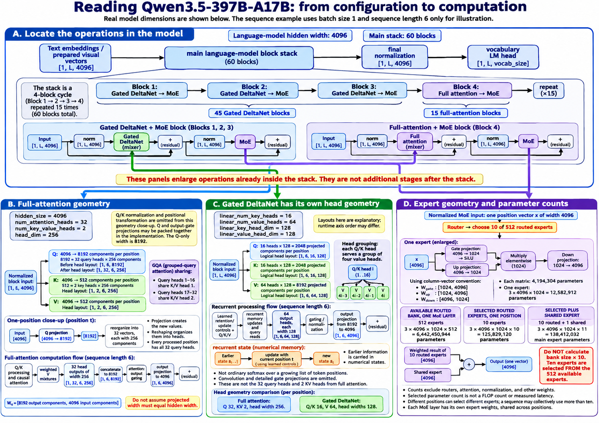
Sources: official configuration; official model card; inspected Transformers implementation. The supplied JSON is the numerical anchor; the implementation link is a moving source, not a pinned checkpoint execution.
Source file: view the complete supplied configuration
This is the JSON from your first ZIP, unchanged. Configuration describes geometry; it does not include learned weight values.
{
"architectures": [
"Qwen3_5MoeForConditionalGeneration"
],
"image_token_id": 248056,
"model_type": "qwen3_5_moe",
"text_config": {
"attention_bias": false,
"attention_dropout": 0.0,
"attn_output_gate": true,
"dtype": "bfloat16",
"eos_token_id": 248044,
"full_attention_interval": 4,
"head_dim": 256,
"hidden_act": "silu",
"hidden_size": 4096,
"initializer_range": 0.02,
"layer_types": [
"linear_attention",
"linear_attention",
"linear_attention",
"full_attention",
"linear_attention",
"linear_attention",
"linear_attention",
"full_attention",
"linear_attention",
"linear_attention",
"linear_attention",
"full_attention",
"linear_attention",
"linear_attention",
"linear_attention",
"full_attention",
"linear_attention",
"linear_attention",
"linear_attention",
"full_attention",
"linear_attention",
"linear_attention",
"linear_attention",
"full_attention",
"linear_attention",
"linear_attention",
"linear_attention",
"full_attention",
"linear_attention",
"linear_attention",
"linear_attention",
"full_attention",
"linear_attention",
"linear_attention",
"linear_attention",
"full_attention",
"linear_attention",
"linear_attention",
"linear_attention",
"full_attention",
"linear_attention",
"linear_attention",
"linear_attention",
"full_attention",
"linear_attention",
"linear_attention",
"linear_attention",
"full_attention",
"linear_attention",
"linear_attention",
"linear_attention",
"full_attention",
"linear_attention",
"linear_attention",
"linear_attention",
"full_attention",
"linear_attention",
"linear_attention",
"linear_attention",
"full_attention"
],
"linear_conv_kernel_dim": 4,
"linear_key_head_dim": 128,
"linear_num_key_heads": 16,
"linear_num_value_heads": 64,
"linear_value_head_dim": 128,
"max_position_embeddings": 262144,
"mlp_only_layers": [],
"model_type": "qwen3_5_moe_text",
"moe_intermediate_size": 1024,
"mtp_num_hidden_layers": 1,
"mtp_use_dedicated_embeddings": false,
"num_attention_heads": 32,
"num_experts": 512,
"num_experts_per_tok": 10,
"num_hidden_layers": 60,
"num_key_value_heads": 2,
"rms_norm_eps": 1e-06,
"router_aux_loss_coef": 0.001,
"shared_expert_intermediate_size": 1024,
"use_cache": true,
"vocab_size": 248320,
"mamba_ssm_dtype": "float32",
"rope_parameters": {
"mrope_interleaved": true,
"mrope_section": [
11,
11,
10
],
"rope_type": "default",
"rope_theta": 10000000,
"partial_rotary_factor": 0.25
}
},
"tie_word_embeddings": false,
"transformers_version": "4.57.0.dev0",
"video_token_id": 248057,
"vision_config": {
"deepstack_visual_indexes": [],
"depth": 27,
"hidden_act": "gelu_pytorch_tanh",
"hidden_size": 1152,
"in_channels": 3,
"initializer_range": 0.02,
"intermediate_size": 4304,
"model_type": "qwen3_5_moe",
"num_heads": 16,
"num_position_embeddings": 2304,
"out_hidden_size": 4096,
"patch_size": 16,
"spatial_merge_size": 2,
"temporal_patch_size": 2
},
"vision_end_token_id": 248054,
"vision_start_token_id": 248053
}Qwen architecture walkthrough
20. Follow a token through dense and MoE Qwen models
Purpose: Connect geometry to one complete request: prefill, choose the first answer token, then decode the following token with retained memory.
Compare the dense full-attention Qwen2.5-72B anchor with hybrid MoE Qwen3.5-397B-A17B. Assume a text-only request tokenizes into six positions. Six is chosen for illustration; words and tokens need not correspond one-to-one.
| Stage | Qwen2.5-72B | Qwen3.5-397B-A17B |
|---|---|---|
| Embedding lookup | Six IDs → [1,6,8192] activations. | Six IDs → [1,6,4096] activations. Visual inputs, if present, would first enter through the vision path. |
| Sequence mixing in each block | Normalize → full causal GQA attention → residual addition. | Normalize → the block's GDN or full-attention mixer → residual addition. |
| Per-position processing | Normalize → dense SwiGLU FFN → residual addition. Gate/up width 29568; return width 8192. | Normalize → route each position to ten of 512 experts; also run the shared expert; combine → residual addition. Expert width 1024; return width 4096. |
| Stack depth | Repeat through 80 main blocks. | Repeat through 60 main blocks: 45 GDN, 15 full attention. |
| Retained inference memory | Each block's K/V cache. | GDN recurrent/convolution states and full-attention K/V caches, independently for each layer. |
| First answer prediction | Latest final-normalized row: 8192 → 152064 vocabulary logits. | Latest final-normalized row: 4096 → 248320 vocabulary logits. |
| Next decoding input | Chosen token embedding [1,1,8192]. | Chosen token embedding [1,1,4096]. |
Prefill processes all known positions
The six rows pass through one shared stack, with causality controlling which earlier information each row can use. Blocks are sequential; supplied positions can use parallel or chunked computation within a block. The FFN weights are shared across positions; the rows are not six independent sets of model weights.
Number impression: One Qwen2.5-72B dense FFN has 726,663,168 weights in its three main projection matrices: 3 × 8192 × 29568. One selected Qwen3.5 routed expert has 12,582,912 such weights. This comparison explains individual projection scale; it is not a comparison of full-model cost, because Qwen3.5 stores many experts and evaluates multiple selected plus shared branches.
Choose a token, then process that token
Known six-position prompt → prefill → latest-position logits → token-selection rule → first generated token → embed that new token → one-position decode through the same stack → next logits → next token → repeat
Suppose a selected token renders as “Hello.” That is an imagined token choice, not a model execution result. The model does not already have the next-step hidden state for it: its selected ID must be embedded and processed.
In the dense model, the new position computes Q/K/V, reads cached earlier K/V plus its own K/V, and runs the dense FFN in every block. In the hybrid model, it updates each GDN state, extends each full-attention cache, and undergoes fresh routing in every MoE sublayer.
What changes during generation?
| Input-dependent, changing state | Fixed learned parameters |
|---|---|
| Hidden activations, attention weights, selected experts, K/V cache contents, recurrent/convolution state, and the growing token sequence. | Embedding table, mixer projections, router weights, expert/FFN weights, normalization parameters, and the LM head. |
Sources: dense anchor config; hybrid MoE anchor config.
Qwen architecture walkthrough
21. Compare current Qwen variants
Purpose: Choose by the exact checkpoint's architecture and operating requirements, not just its version or parameter label.
The official configs and cards for the three models below were retrieved for this tutorial. This is a selected current-source comparison, not a claim to list every release or identify the latest model in the whole family. Links to main can change.
| Checkpoint | Hidden width / main blocks | Sequence-mixer counts | Feed-forward path | Released checkpoint inputs |
|---|---|---|---|---|
| Qwen3.8-27B | 5120 / 64 | 48 GDN + 16 full attention. | Dense FFN, intermediate width 17408. | Text, images, video; vision output width 5120. |
| Qwen3.5-397B-A17B | 4096 / 60 | 45 GDN + 15 full attention. | 512 routed experts, top-10 + shared; expert intermediate width 1024. | Text, images, video; vision output width 4096. |
| Qwen3.8-2.4T-A95B | 8192 / 92 | 69 GDN + 23 full attention. | 512 routed experts, top-10 + shared; expert intermediate width 2048. | Text only in this released checkpoint; no vision configuration. |
All three repeat three GDN blocks followed by one full-attention block. The 27B model is therefore dense but hybrid. Dense describes its FFN; it does not mean full attention in every block.
Similar pattern, different geometry
| Checkpoint | Full attention: Q / KV heads, head width | GDN: QK / V heads, head widths | Native configured context / vocabulary |
|---|---|---|---|
| Qwen3.8-27B | 24 / 4, width 256. | 16 / 48, widths 128. | 262144 / 248320. |
| Qwen3.5-397B-A17B | 32 / 2, width 256. | 16 / 64, widths 128. | 262144 / 248320. |
| Qwen3.8-2.4T-A95B | 64 / 4, width 256. | 16 / 128, widths 128. | 262144 / 248320. |
Number impression: The 2.4T model has the same number of routed experts and selections as the 397B anchor, but each expert's three main matrices contain 50,331,648 weights: 3 × 8192 × 2048. That is four times the 397B anchor's 12,582,912, before accounting for its deeper stack. One 27B dense FFN's three projection matrices contain 267,386,880 weights: 3 × 5120 × 17408. These are scoped matrix counts, not complete checkpoint totals or latency predictions.
Checkpoint is not hosted service
The Qwen3.8-2.4T-A95B card explicitly identifies the released model as text-only and requiring thinking mode. It describes the hosted Qwen3.8-Max service as adding features such as vision input and non-thinking support. Do not transfer those service capabilities to this downloadable checkpoint. Likewise, a hosted extended context setting is not the same as the checkpoint's native configured context.
Practical consequences
- Weight capacity: budget full stored banks, precision, scales, and any offloading—not merely activated labels.
- Per-token work: check actual mixer dimensions and selected expert widths. Sparse activation does not remove routing or communication costs.
- Context memory: budget recurrent/convolution states plus full-attention K/V for each sequence. Multimodal positions also consume context.
- Training: full-weight optimization needs gradient and optimizer state for trainable parameters. LoRA reduces that state, but still needs a compatible forward and input-gradient backward through frozen mixers and experts.
- Runtime support: verify this checkpoint's hybrid mixers, expert dispatch, precision kernels, cache management, and optional MTP/speculative path in the chosen framework.
- Quality: evaluate the real task. A newer post-trained release may improve behavior while retaining the same broad architectural foundation.
Official sources checked: 27B model card and config; 397B model card and config; 2.4T model card and config.
Keep beside you
Plain-English glossary
- Token / token ID
- A token is an item from a model’s vocabulary; a token ID is its integer index. A written word can contain several tokens.
- Sequence / batch
- A sequence is one ordered list of token occurrences. A batch holds several sequences; it does not normally combine their contexts.
- Vector / hidden width
- A vector is a list of numbers. Hidden width D is the number of components in each position’s main vector, not the number of axes.
- Weight / parameter
- A learned setting that normally stays fixed while generating a response. Matrices, normalization scales, and embeddings can contain parameters.
- Activation / hidden state
- A computed intermediate value for a particular input. A hidden state is the vector representing a position at some processing stage. Activation function means a nonlinear rule, a related but different use of “activation”.
- Query / key / value
- A query asks what information to read; keys provide numerical matches; values supply the information to mix. These are learned projections, not literal questions or answers.
- Attention weight / vocabulary probability
- Attention weights form a mixture across readable positions. Vocabulary probabilities describe which token might come next. Both can use softmax, but over different axes.
- Head / block / layer
- A head is one attention view. A transformer block combines sequence mixing and a feed-forward path, with normalization and residual connections. A model often calls each repeated block one layer.
- Residual connection
- Add the branch output to the same position’s branch-input vector. It is not the value vector from a previous token.
- Logit / LM head
- A logit is a raw score for a vocabulary token. The language-model head maps a final hidden vector into these scores.
- Causal mask / loss mask
- A causal mask prevents reading future positions. A loss mask decides which prediction errors contribute to a training objective.
- Teacher forcing
- Supply the known correct earlier response tokens during supervised training. Predictions for many positions can then be computed together, without first sampling an answer.
- Gradient / optimizer
- A gradient describes local sensitivity of loss to a value or parameter. An optimizer uses parameter gradients to update trainable weights.
- LoRA
- Low-rank adaptation: train a small extra matrix path around selected existing weight matrices. It does not add transformer blocks.
- Router / expert / top-k
- A router scores available expert feed-forward networks. Top-k selects the k highest-scoring experts for that position. A shared expert is a separate always-active path in designs that use one.
- Prefill / decode / KV cache
- Prefill processes a supplied prompt. Ordinary cached decoding processes a newly selected token using earlier keys and values retained at full-attention layers.
- Sequence length / context window
- Sequence length is the current number of positions. A context window is a supported capacity. The deployed limit can differ from the model’s advertised capacity.
- Recurrent state
- A compact running memory updated as positions arrive. It is not necessarily a list of exact earlier tokens or their vectors.
- Hybrid sequence mixing
- Different blocks use different sequence mixers, such as Gated DeltaNet and full attention. Hybrid mixing and dense-versus-MoE feed-forward design are separate choices.
- Quantization
- Represent numbers with a limited set of values, usually using scale factors. Storage format, computation format, and accumulation format can differ.
- Activated parameters
- Parameters involved in the selected computation for a token; not a statement that every other weight disappears from storage.
- Data / tensor / pipeline / expert parallelism
- Divide different sequences, pieces of a matrix computation, consecutive groups of layers, or expert ownership across devices. These mechanisms can be combined.
Source boundaries
Sources and diagram index
This tutorial follows the approved 21-section roadmap and the transformer-related explanations and follow-up questions from your guidance chat. Unrelated conversation branches and duplicate messages are omitted.
- Your three supplied ZIP files: transformer1.zip, transformer2.zip, transformer3.zip.
- The supplied Qwen3.5-397B-A17B configuration, included in full in Chapter 19.
- Official model configs and implementation references are linked beside the Qwen discussions. Treat release comparisons as the documented snapshot stated there, not as a promise about all future releases.
The original PNG diagrams are embedded without alteration. Word-level sequences, head labels, simple matrices, and small training calculations are teaching examples unless explicitly identified as real configuration values. Read the adjacent caveats where a diagram simplifies a real implementation.
All 14 supplied diagrams, in teaching order
- Chapter 2 — Transformer Block Data and Weights Overview.png
- Chapter 5 — Transformer Attention GQA Infographic.png
- Chapter 7 — image.png
- Chapter 8 — From Context to the Next Token.png
- Chapter 9 — One Sequence, Two Vectors, One Model.png
- Chapter 9 — How a Model Learns_ One Training Step.png
- Chapter 9 — Shared Weight Update Infographic.png
- Chapter 9 — Inside a Transformer Training Pipeline.png
- Chapter 10 — LoRA Inside Transformer Blocks_ A Visual Guide.png
- Chapter 12 — Dense vs. MoE Transformer Block Infographic.png
- Chapter 16 — Transformer datatypes_ storage, computation, accumulation.png
- Chapter 16 — Four ways to distribute transformer work-1.png
- Chapter 16 — Corrected Transformer Routing and Pipeline Guide-2.png
- Chapter 19 — Qwen3.5 Architecture_ From Configuration to Computation.png
This is an original tutorial using clear technical-book conventions: intuition, numerical examples, hints, and key points. It is not an O’Reilly or For Dummies publication.